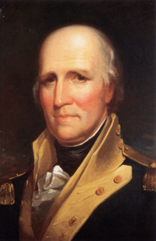
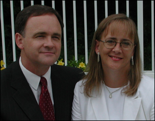

Contents
FFA Home Page
In Appreciation
FFA Charts for DNA Test
Group 4
Geography
History and Research
1790 Kentucky Map (can be enlarged over 200%)
DNA Test Data for Henry French
FFA Charts for DNA Test Group 4
DNA Test Group 4 Test Results (old
website)
DNA Test Group 4 Test Results (new
website)
DNA Test Group 4 Lineages
DNA Test Group 4 Cross-Reference Chart
DNA Test Group 4 Blog
DNA Test Group 4 Descendant Chart to Testee
DNA Group 4 Analysis
DNA
Testing
Genealogy of Henry French
Henry French’s
Father
First Generation
Second Generation
Third Generation
Fourth Generation
Fifth Generation
Sixth Generation
Seventh
Generation
Eighth Generation
Vital Records, Census Records, and Land Grants
Bibliography
and Records
In Appreciation
Thank you to Deb Skoff and Vicki French Carroll who not only
contributed a significant amount to this chart, but who are both descendants of
Henry’s son George W.
Foreword
I’ve researched this line just about all I can from
ancestry.com and from the internet. Additions need to come from family members
or from local books or historians who haven’t put their information online.
P.S. Although Henry French is not in my line, I will
continue to do research on him as time permits. My line is FFA Chart #6.
FFA Charts for DNA Test Group 4
FFA Chart #10,
John Peter French and William Lewis French of TN
FFA Chart #23,
Isaac French of Canada
FFA Chart #30,
Louisa French of WV, sister of FFA Chart #195
FFA Chart #31,
Henry French of KY
FFA Chart #129,
Peter French of TN – no test yet
FFA Chart #136,
George French of SC
FFA Chart #186,
Philip French of IN, brother of FFA Chart #206
FFA Chart #193,
David French of KY
FFA Chart #194,
Samuel and George Hedges French of IN
FFA Chart #195,
Jacob French Sr. and Jr. of WV
FFA Chart #206,
Samuel and David French of IN, brothers of FFA Chart #186
The DNA expert and
administrator for the surname French is Julia French Wood. Email her about all
DNA questions to JuliaFWood@aol.com.
For ancestry questions, email marafrench@mindspring.com.
Geography
Clark County, Kentucky, was formed in 1792 from Bourbon and
Fayette
Counties
Montgomery County was formed in 1796 from Clark
County
Estill County was formed in 1808 from Clark and Madison
Counties
Powell County was formed 1852 from Clark, Estill, and Montgomery
Counties
History and Research
In case the photo at the top of this page is unreadable
online, here is what is says along with comments about Henry French.
Harrodsburg
1773 -- Henry moved to Mercer County before it became a
settlement, along with George Rogers Clark. He was only 18 years old. Colonel
Clark was born 19 Nov 1752 in Albemarle, VA, and was therefore 21 years old. He
was 3 years older than Henry and he died 3 years earlier than Henry on 13 Feb
1818 in Louisville, Jefferson Co., KY.
1774 – Land laid off as Harrodstown by James Harrod
and companions. First permanent English settlement west of the Alleghany
Mountains. James was born ca. 1746 and married in Sep 1778 in Mercer Co., KY.
His father was born in Hawbridge, Bedfordshire, England and immigrated to
Maryland in 1718 at age 18, probably a very similar scenario as Henry French.
In other words, Henry’s father was perhaps the immigrant and he probably
immigrated about 1721.
1776 -- Virginia Legislature formed Kentucky County, the
area now Commonwealth of Kentucky, named Harrodsburg seat of government.
1777 -- First Court held in the area.
1779 – 17 Apr 1779 City Trustee in Louisville, KY.
1779 – 24 Apr 1779 drew lot 92 in Louisville, KY
1780 - Virginia Legislature divided Kentucky County into
Lincoln, Fayette, and Jefferson Counties with Harrodsburg seat of Lincoln
County government.
1782 – 19 Aug 1782 Henry was in the Battle of Blue
Licks in Robertson Co., KY. Jacob bought the land on the Tullis Run from James
Davis, and he bought some from his brother Edward Davis. Soon after the
last battle of the Revolution - Blue Licks, KY, - Edward Davis and his wife and
James Davis and his wife moved to KY with a large group of 500 people.
Edward bought land from Henry French and his wife Elizabeth, which might
indicate that Henry French arrived in KY before the Davis family did.
1785 -- Virginia Legislature formed Mercer County out of
Lincoln, which was the same when Kentucky became a state in 1792. Harrodsburg
was continued as a county seat.
Harrodsburg was the center of organization that held the
Northwest against outside attack. George Rogers Clark planned his campaign in
Harrodsburg in 1778. It was the Headquarters of Col. John Bowman military
commander of Kentucky County, 1775-1780.
Mercer County FIRSTS in Kentucky
Mercer County was created by an act of the Virginia General
Assembly on March 17, 1837, from parts of Giles and Tazewell counties
(Virginia). The county was named in honor of Brigadier-General Hugh Mercer
(1725-1877). He was born in Scotland and educated in medicine at Marischal
College in Scotland. He immigrated to Philadelphia in 1746 and later moved to
Fredericksburg, Virginia. He served as a surgeon in the French and Indian War
of 1755 and in the American Revolutionary War. He was mortally wounded by
bayonet by British soldiers at the Battle of Princeton, New Jersey on January
3, 1777. He died from the wounds on January 12, 1777. Among his descendants was
General George S. Patton, one of America's finest military leaders during World
War II.
1769 - Daniel Boone wintered in a cave in Kentucky when it
was still part of Virginia.
1770 - Henry married perhaps in MD as his first child, a
son, was born in 1770, and a daughter, was born in 1771 in MD.
1771 - Henry is mentioned in Frederick Co., VA, along with
Jacob and George French.
1773 - Henry moved to Mercer County before it became a
settlement, along with George Rogers Clark. He was only 18 years old.
1774 - Kentucky's first settlement by James Harrod,
Harrodsburg. James Harmon's corn crop.
1775 - Rev. John Lythe's services. Dr. George Hart,
physician.
1776 - Mrs. Jane Coomes school. William Poage's plow and
loom. Ann McGinty's linsey-woosey. Wheat sown, reaped 1777.
1777 - John Cowan's census.
1778 - Henry French volunteered in the Revolutionary
War at age 23.
1779 - A public meeting was held on 10 April 1779, and
appointed William Harrod, Richard Chenowith. Edward Bulger. James Patton, Henry
French, Marsham Brashears, and Samuel Moore trustees to lay out the town of
yet unnamed Louisville. These trustees met on the 17th of April 1779, and,
having agreed upon a plan of the town, named it Louisville. Henry was only 24
years old, about the same age as many of the other men, including General
Clark.
1780 - Jefferson County was named after Thomas Jefferson.
1782 - Capt. McMurtry's grist mill.
1783 - Horse racing, Humble's "Race Paths"; Jail;
Road to Squire Boone's Station "viewed" and opened.
1792 - Originally part of Virginia, Kentucky became the
15th state to join the Union.
1821 - Henry French d. 11 Aug 1821 in Mercer Co., KY
ENLARGE --
Map of Kentucky in 1790
Early French Family Background in 1800
Kentucky
Using the 1800 Tax List below, we can analyze these
predictions:
1.
John French, progenitor of FFA Chart #194, had died ca. 8 Jan 1791 and is
not listed.
2.
James French, John’s first son, was at least 18 years old, b. ca. 1782, is
listed in Lincoln Co., KY, 8/23/1800 where his father first entered
Kentucky.
3.
George French, John’s second son, was only 16 years old and is not listed.
4.
Samuel French, John’s third son, was only 11 years old and therefore this
person could not be him, but a Samuel is listed in Mercer Co., who could be
connected to Henry French on FFA Chart #31. Could he be from FFA Chart
#146?
5.
William French and Joseph, Levy, and Moses of
Livingston Co., KY, are on FFA Chart #25.
6.
David French of Jefferson Co., KY, appears on 9/3/1800 on FFA Chart #193.
7.
Henry French of Mercer Co., KY, is on FFA Chart #31.
8.
Benjamin and William French of Barren Co., KY, are on FFA Chart
#146.
9.
Ignatius, Raphael, Joseph, and probably Paul French of
Nelson Co., KY, are on FFA Chart #137.
10.
James French of Cumberland Co., KY in 1799 could be on FFA Chart #14.
11.
James and William French of Madison Co., KY, is probably on FFA Chart #14
or #151.
12.
James and Rodolph French of Washington Co., KY, is probably on FFA Chart
#137.
13.
Simon French of Christian Co., KY, is on FFA Chart #188.
14.
William French of Warren Co., KY, is on FFA Chart #188.
French family in early Mercer Co., KY,
records:
1800 Tax List – Henry French, FFA Chart #31
1800 Tax List – Samuel French could be the brother of Henry Sr., FFA Chart
#146.
1810 Census – Henry French, FFA Chart #31
1820 Census – Henry French Sr. and Henry French Jr., FFA Chart #31
1820 Census – John French, 1 0 0 0 1 0 2 1 0 1 | 0 0 1
1820 Census – William French, 2 0 0 0 1 0 1 0 0 1 | 0 0 1
1820 Census -- Esthara French, 0 0 0 1 0 0 0 0 1 0
Slaves who remained in Kentucky
As a side note, perhaps Henry had slaves as various black
French members are listed in Louisville, Jefferson Co., KY, in the 1870 and
1880 census, after emancipation in 1863.
Rachel French, b. ca. 1807 in KY, appears in
the 1880 census, age 73.
Samuel French, b. 1810 in KY, appears in the 1880
census, age 70.
Henry French, b. ca. 1807 in KY, appears in
the 1870 census, age 63, with Mary French (30), Harrison French (12),
Henrietta French (8), Louie French (7), and William French (2).
March French (67) and his wife Nancy (52) and
children Fanny (22), Belle (17), and William (13) are listed in the 1880
census of Louisville, Jefferson Co., KY.
Marshall French (55), and his wife Nancy (40)
and their children Anna (17), Fannie (15), Joseph (8), Belle (6), William (4)
are listed in the 1870 census of Louisville, Jefferson Co., KY.
Henry French, b. ca. 1810 in KY, listed in the
1880 census of Newtown, Scott Co., KY, living with various families:
Graves, Blackburn, Burley, Green, and Morrison.
Samuel French, b. 1810 in KY, listed in the 1880
census of Louisville, Jefferson Co., KY, a widower, Black, both parents
born in Virginia, living with various families: Bronson, Hoskins, and Firmin.
Rachel French, b. 1807 in KY, listed in the 1880
census of Louisville, Jefferson Co., KY, Black, the mother of Lucinda
Davis. Rachel states that both her parents were born in Virginia. Living with
her is Willis Cowan, age 29, Mulatto, son of Lucinda Davis, who is 45. In the 1870
census of Mt. Sterling, Montgomery Co., KY, Willis Cowan is 21, Black.
Because Rachel is listed as Black and her daughter, Lucinda Davis, is listed as
Mulatto, Rachel’s husband must have been white. In the 1850 census of
Scott Co., IL, Rachel is 43, born 1807, married to Jacob French, with children
James 20, Paul 18, Caroline 16, Lucy 14, Charlotte 12, Sarah Jane 8, and John
just born. In the 1860 census of Jacksonville, Morgan Co., IL, Rachel is
52 living with her husband Jacob 53, daughter Sarah I. French 15, and son John
French 10.
Slaves who moved to Detroit
Anna French, b. ca. 1793 in KY who moved to
Detroit, Wayne Co., MI and d. there on 17 Jul 1873. She was married and Black.
George French, b. ca. 1810 in KY, who moved to
Detroit, Wayne Co., MI, and is listed in the 1880 census there, m.
Carroline French, she was b. in 1835, both are Black. She states that her
father was born in Massachusetts and her mother in Canada.
False
Research
Henry born in Germany? Birthplace of Henry in Germany
is from “Portrait and Biographical Album, Vermilion Co., IL”, 1889 Biographical
Sketch of Ersom French, son of George French, and grandson of Henry French,
Chicago, Chapman Bros., pgs 735-736. This portrait also says that after being married
to Elizabeth Ersom (a German name), Henry French left his home in Germany and
sought a new field of labor under the banner of freedom, in the land of
liberty. See Ref. [53] for complete article. The article was probably referring
to the fact that Henry left his home in a German area of PA. Truth: Henry was
born in the U.S. and was the son of Jacob French of Berkeley County, WV.
The following 2 men named Henry French are not part of this
chart:
·
Henry French who married Abigail Anderson of Frederick
Co., VA, b. 1765, Chart
#192, DNA Test Group 11. The DNA test may not be the same as DNA Gp. 4 due
to an adoption or illegitimacy, but this chart is still being kept separate
until more research has been done.
·
Henry French who married Catherine Heatrone of Washington
Co. and Greene Co., TN, born 1755, Chart
#10, DNA Test Group 4.
Henry French’s Father
Henry’s father was Jacob French who lived in PA. Jacob’s
father was most likely the immigrant or he had immigrated with his parents when
he was young. The only documents we have of this early French family are from
Jacob’s land deeds, the earliest being in 1752 in Washington Co., MD, 3 years
before Henry was born.
An article written by Don Wood, the archivist in Berkeley
Co., WV, about Jacob says: "Jacob French lived on Tullises Branch
on the west side of the run below the mill at Spring Mills. He sold his 200-acre
plantation to his two sons George and Jacob French in 1785,
BCDB 8 (Berkeley County Deed Book), p. 348. They were also to pay so much to
their two brothers John and Henry French and also their sisters
(BCDB 8, p. 348). Apparently sons John and Henry did not remain
in Berkeley County." George and Jacob remained in Berkeley County. It is
also apparent that these children are named in his will in order of their
birth: George, Jacob, John, Henry. For earlier lineages, see FFA Chart #195.
First Generation
1.1* Jacob French, the Elder, b. 1705 in
England, assumed to be the patriarch or immigrant of this line, and assumed to
have immigrated from England to Pennsylvania on 27 Feb 1728 at age 23, married
in Franklin Co., Pennsylvania (in a very German-populated area) to Mary about
1730. John d. before 3 Oct 1755 in Antrim Twp., PA. John and Mary had the
following children: Jacob, Louisa, George, and John, all
born between 1730 and 1742 in PA. He may, of course, have had more children.
The 3 sons have had 9 DNA tests taken on those lines so far as of April 2011,
see FFA Chart
#195.
Second Generation
2.1* Jacob French, the Younger, b. ca. 1727, was
John’s first son. Jacob had at least 7 children: Barbara, Mary, George, Jacob,
John, Elizabeth, and Henry. See Jacob French’s line at FFA Chart #195.
Third Generation
Children of Jacob and Magdalena French, 2.1
3.1 Barbara French, FFA Chart #195
3.2 Mary French, FFA Chart #195
3.3 George French, FFA Chart #195
3.4 Jacob French Jr., FFA Chart #195
3.5* John French, moved to Lincoln Co., KY, m. Catherine, FFA Chart #194,
see below.
3.6 Elizabeth French, m. Joseph Lamon on 23 Oct 1805 in Green Co.,
TN, FFA Chart
#195
3.7 Henry French, b. 1755, moved to Mercer Co., KY, FFA Chart #31.
Samuel French – b. ca. 1760. Even though it seems apparent that
Samuel French in Mercer County, KY records in 1794 thru 1804 was Henry's
brother - he was not included in Jacob French’s will. That Jacob French
died in 1788, and he seemed to strive for fairness and equality.
3.7* Henry French, Sr., b. 9 or 12 Mar 1755 most
likely in Frederick Co., VA [8], d. 11 Aug 1821 in Mercer Co., KY. Henry was a
Gunsmith, Blacksmith, and Armourer [35], as was his brother George. He also
helped to name the town of Louisville, KY. Henry was a farmer and owned horses
and cattle. He m. Elizabeth Ersom and had sons David, George, John, and Henry.
From “The Kentucky Encyclopedia” by John
E. Kleber
DNA
Henry French Sr., b. 12 Mar 1755, a blacksmith
and gunsmith, m. Elizabeth Ersom (a German name) of Maryland. He d. 11 Aug
1821. Elizabeth was b. 30 Nov 1755 and d. 22 Mar 1828, his son George
Washington French, and his son Thomas Sturman French, and his son Perry Sterman
French, and his son Herbert Earl French, and his son Robert Rufus, and lastly
his son Col. Thomas French, the brother of Vicki French Carroll who researched
this line (DNA Test 176945).
Deeds and Other Records -- 1771
·
Amelia C. Gilreath, comp., Frederick County, Virginia Deed Books
15 and 16 1771-1775, (Nokesville, VA: P.p., 1992) p. 71. Bk.
15, p. 363 - 10 April 1772 Know all men by these presents that I George
French Sen. blacksmith in Frederick County … for and in consideration
of one hundred and fifty five pound's thirteen Shillings paid by Jacob
French miller in County aforesaid … have bargained and sold … a dirk
Bay Horse now in the custody of Lewis Stephen's … a gray Horse in the
possession of Henry French and 2 milk cows and one Calf … 2 year
old calf and puter and Iron pots in possession of Alexander Campbell … a
site (sic) of Black Smith Tools … etc …
Wit: John Barnes (he d. 1822 in VA, spouse Sarah
Carter)
George French
John Nighewanger
John
(JL) Larrick (he d. 4 Jun 1782 in Frederick Co., VA, spouse Mary)
Recorded:
5 Aug. 1772
Lloyd De Witt Bockstruck, compiler, Virginia's Colonial
Soldiers, (Baltimore: Gen. Pub., Inc., 1988)
-----------------
To me it appears as if George French is selling
various items to Jacob French, including items owned by George French but in
the possession of Henry French, Alexander Campbell, and Lewis Stephens
in 1772.
It would seem to me as though George was not dying or
else he would have willed these items, and he would have willed them to his
wife and children. I would therefore assume that George was going to move out
of Frederick Co., VA. I would also believe that Jacob, George, and Henry
French were brothers and they all lived in Frederick Co., VA, in 1772 --
all of the same generation, born about 1750-55.
If this were true, then Henry French could have
been the one who moved to Mercer Co. KY ca. 1773, only the following year and
he also would have not needed the 2 milk cows and 1 calf, etc. sold to Jacob
French. Jacob would have stayed in VA. George was probably the blacksmith who
moved to Greenville, SC, but not until 1784. George and Jacob acquired their
father's 200-acre plantation in 1785. Jacob died in WV in 1826.
Now my problem is that both Jacob and George appear in
the 1810 census of Berkeley Co., WV. Jacob had 9 people in his household and
George had 10 people.
This leads me to believe that there were 2 men named
George French. It is curious to me that George French is mentioned above with
Sen. after his name, but the others do not have a senior. This leads me to
believe that there was a George French Jr. already born by 1772. Could the
older George French be the father of the younger George French? Birth dates
would have been ca. 1730 and ca. 1750. Any comments as to who they were?
Alexander Campbell -- no one that early, but there is
a later one who was quite famous, a clergyman.
Lewis Stevens, 1713 - 1802, m. Maria Christina
Rittenhouse (probably originally the German name Rittenhaus), lived in VA.
Lewis Stevens' father was Peter Stephens, 1687-1757, an immigrant originally
from Heidelberg, Germany. Peter immigrated in 1722 at age 35. They came to the
Valley of Virginia after spending some years outside Philadelphia, PA. The
chief among these Germans was Jost Hite (1685-1761) who bought land in
Shenandoah Valley, in what is today the central and southern part of Frederick
Co., VA. Lewis built a house and mill on Cedar Creek. The Hite family owned Teter
French's house in Berkeley Co., WV -- this is from FFA Chart #195.
Deeds and Other Records – 1779-1780
Ref. [40] found the following information about Henry
French in “The Centenary of Louisville” by Reuben T. Durrett, published in
Louisville, KY by J. P. Morton and Co., printers to the Filson Club, 1893 (It
is available online on Heritage Quest--many libraries have this database):
·
Page 33 - In April, 1779 Henry French was appointed
trustee of the newly-established city of Louisville, KY-- "The first
official step toward establishing the town of Louisville at the Falls of the
Ohio was taken on the 17th of April, 1779, when the inhabitants who were there,
in conformity with the recommendations of the Court of Kentucky County touching
the establishing of new towns, held a public meeting and appointed trustees for
that purpose. The Trustees selected were William Harrod, Richard Chenowith,
Edward Bulger, James Patton, Henry French, Marsham Brashears, and Simeon
Moore. These Trustees then met and adopted rules for their government. They
agreed upon a plan of the town to be called Louisville, laid off the ground
they selected along the river into half-acre lots, made a map of their work,
and appointed April 24, 1779, for each inhabitant to draw one lot in a public
lottery."
·
French, Henry
1779 comes before the VA Land
Commission on 20 Nov 1779 "at the Falls of the Ohio"
(Louisville) claiming 400 acre preemption on a small branch of Brashiers
Creek,
"a branch of Salt River about 1/2 mile below the Trace from this
to Harrodsburg"
with proof of his settlement made in
1778 a certificate was granted him for the land.
1794 tax list of
Mercer Co. KY with 1 white male over 21. 1 black over 16
200
acres Shelby Co. KY
338 acres Woodford Co. KY
400
acres Mason & Clark Co. KY
1795 tax list of Mercer Co. [no
tithable counts on this list - just land]
400 acres on Salt River,
Mercer Co. KY
200 acres on Salt River, Mercer Co. KY
200 acres on Plum Creek, Shelby Co. KY
338 acres on N. Elk horn
Scot Co. KY
400 acres on Main Licking, Mason & Clark Co. KY
·
Pages 142-143 - Henry French drew Lot 92 on 24 Apr 1779--
"Appendix F. ...BY WHOM DRAWN: Henry French, NUMBERS (lot number):
92." Others drawing lots that day included Isaac Bowman, Jonathan and
Squire Boone, Edward Bulger (Henry was a witness to his will in 1782), Samuel
and William Harrod, Michael Humble (described in the same book as the first
gunsmith in Louisville), Nicholas Merriwether, John Paul, and Jacob.
·
From the Index to the George Rogers Clark Papers:: http://my.execpc.com/~sril/clark.htm.
5301-3-1256-1258-April 4, 1780-Continued: pounds of beef; Levin Powell for
bushels of corn; John Briscoe for 16 bushels of indian meal; Thomas Bull for 5
bushels of salt; Henry French for 2 and 1/2 bushels of salt; James Bidy
for 3 bushels of salt; Nathaniel Hart; James Beaty; and Abraham Vanmetre; Some
individuals were listed more than once and some supplied different provisions.
John Donne noted Basil Prather had supplied 102 bushels of flour on April 4,
1780 for sick but it was not listed in the account since Dunne did not know the
price charged.
Deeds and Other Records – 1782
·
John Benedict was in Kentucky at least by 1782. He died 27 Nov
1809. Virginia law allowed settlers to claim 400 acres of land by
clearing and planting a crop of one acre and by building a dwelling at least
12’x12’. John Benedict claimed 400 acres on the banks of Harrison’s Creek
(later shortened to Harris’ Creek). Clear title was not established until
after his death when Henry French deeded the four hundred acres to his
sons Jacob and John, Jr. Lincoln Co., KY Deed Bk. H, pg 84.
Natchez, Mississippi, Court Records - 1790
· James
Harrod in 1790: http://harrodgenealogy.blogspot.com/ --
traveling down the Mississippi River to Natchez
Court records on Natchez reveal details of a trip made
by Henry French of Kentucky who arrived in Natchez in April or May 1790, at a
time when Mississippi was not a state, as it was created as “the territory of
Mississippi” in 1798. Prior to that, there were British, Spanish, and French
claims in that area; therefore, outside the Kentucky state jurisdiction, in
other words, out of the country [72]. The article reads in quotes:
“Colonel Turner Williams was empowered by Peter Walker
and John Tear, both of Kentucky, to seek and restore slaves for them. He stated
that he found them in possession of Andrew Beall of the Natchez District.
James Harrod was summoned and he appeared as a
witness. He testified that he knew the negro Isaac (French?) in Kentucky and he
was in possession of James McFadden who brought him from North Carolina to Henry
French who later told deponent that he wanted to take his slaves to another
country or he would lose them. The deponent was preparing to make a voyage and
French arranged to come along with him and brought four slaves. He left on a
flat boat and French, who had come down the river in a pirogue, got on his flat
boat. "When we came to Great Falls, our only stop, Henry French hid
the Negroes."
Turner Williams reported he was not able to locate all
the slaves and that he would have to go back to Kentucky....
However, while in Natchez, Williams bought a slave,
Peter, from Silas McBee "citizen of America", June 2, 1790.”
Silas McBee was b. 1765 and d. 1845. I looked at the
Natchez Court Records and found on 2 Jun 1790 Silas McBee, citizen of America
to Turner Williams negro man, Peter, aged 27, nat. of Va., for $400 paid. Both
sign. This could mean that Peter was born in 1763 in Virginia.
How does this read to many of you? In April or May
1790, Henry French was in Mercer Co., KY. Evidence of this is his son was born
in Mercer Co., in 1788 and his daughter in 1791. The article is talking about
the negro Isaac in Kentucky. Did this negro belong to Henry?
Does it say that Henry French was concerned about losing
his slaves? Is the other country that Henry wanted to take his slaves to -- was
that country Canada? If Isaac was Isaac French, then it was at that time, in
1790, that Isaac French was in Detroit and his son Peter was born, and then
they left for Canada.
Are the "Great Falls", their only stop, the
Great Falls in Mississippi? When Henry French hid the Negroes, it sounds as if
they are talking about the 4 slaves. Would you agree? Apparently they traveled
in a flat boat, but did they travel to Mississippi, or where? The article above
says "another country", not "another state". Natchez is
definitely on the Mississippi River, but is that where they were going? I do
believe the Mississippi River passes Louisville, KY. Also, I believe there is a
"Great Falls" in Memphis on the Mississippi River.
Silas McBee was b. 1765 and d. 1845. I do find many records
for him in Mississippi.
I looked at the Natchez Court Records and found on 2
Jun 1790 Silas McBee, citizen of America to Turner Williams negro man, Peter,
aged 27, nat. of Va., for $400 paid. Both sign. This could mean that Peter was
born in 1763 in Virginia.
Deeds and Other Records – 1791-92
·
Mercer County, Kentucky, Court Order Book 2, 25 Aug 1791, p 243,
Walter Beall, assignee of John Reed v Stephen Fisher, on debt. There came a
jury composed of John Arnold, John Little, Thomas Lillard, Edmund Munday,
Solomon Corn, John Robertson, Henry French, John Goodnight, Stephen
Hannah, Gideon Higgins, Joseph Mosby and Andrew Bunton, who found the defendant
guilty as complained, and assessed the damages of 1 penny in addition to the
debt and costs. Judgment to plaintiff for 24 pounds debt, plus the 1 penny
damages, and costs.
·
Mercer County, Kentucky, Court Order Book 2, 25 Aug 1791, p 244,
Joseph Lawrence Stephens, Executor of George William Stevens decd v George
Scott on debt. There came a jury composed of John Arnold, John Little, Thomas
Lillard, Edmund Munday, Solomon Corn, John Robertson, Henry French, John
Goodnight, Stephen Hannah, Gideon Higgins, Joseph Mosby and Andrew Bunton, who
assessed damages for the plaintiff of 2 pounds, 16 shillings, 3 pence and
costs. Plaintiff to recover against the defendant and Robert Scott, appearance
bail, 13 pounds, 5 shillings, 4 pence, and costs.
·
Mercer County, Kentucky, Court Order Book 2, page 337, 29 Mar
1792, Alexander E Bullitt, Executor of William Christian decd v Henry French
on debt. There came a jury composed of John Thomas, Christopher Cammack, Joseph
F Mitchell, Simeon Moore, William Wells, Amos Ragan, William Brackham, William
Alexander, Henry Prather, Robert Kelsoe, Edward Husk and Roger Patton, and upon
returning into Court to render their verdict the Plaintiff did not appear.
Jurors discharged, and the case non-suited. Defendant to recover 5 shillings
from plaintiff, and his costs.
Deeds and Other Records -- 1796
·
Mercer
County, Kentucky, Deeds, Book 2, Page 446 - The deposition of Edward
Davis taken this 8th day of February 1796 at the house now occupied by Isaac
Coffman in Mercer County for the purpose of establishing the place whereon the
improvement was made in the year 1774 that was claimed by Isaac Taylor deceased
which deposition was taken by virtue of an order of the Court of Mercer County
between the heirs of said Isaac Taylor deceased of the one party and James
Speed, John Lillard and Henry French of the other part, the said James
Speed, John Lillard and Henry French having acknowledged legal notice of
the taking the deposition aforesaid, before us Thomas Freeman and Garrett
Darland Commissioners appointed by the Court aforesaid for the purpose of
taking the said deposition and the said Edward Davis having been duly sworn
saith: That in February 1780 he was in company with Silas Harlan and they went
by the place where Isaac Coffman now lives and the said Harlan showed this
Deponent an Improvement which stood near the Spring now used by the said Isaac
Coffman and told him it was an Improvement belonging to Isaac Taylor and that
him the said Harlan had made it for the said Taylor. This deponent further
saith that he was afterwards directed by the said Harlan to purchase the same
improvement above said from the said Isaac Taylor and told this deponent that
he expected the claim could begot cheap as the improvement had cost Taylor only
3 pounds which he had paid to him the said Harlan for the making of the improvement.
This deponent further saith that he was a near neighbor to aforesaid Isaac
Taylor and is well satisfied that he the said Taylor never was in this state
either before or since the making of the improvement. Question by James Speed:
when did you understand this aforesaid sum of 3 pounds was paid by Isaac Taylor
to Harlan? Answer: I understand (but cannot tell by whom) that the money was
not paid by Harlan until after the battle at the Point [Pleasant], which was
the fall of 1774, and further the deponent saith not.
Deeds and Other Records – 1800-1801
·
339. Clark, GeorGe roGers.
Six documents relating to George Rogers Clark, one of them signed by him.
Includes: Note from Buckner Pittman to James Agnew, instructing him to pay
Clark 4 pounds and 4 shillings for 14 days work (equivalent to 14 dollars),
signed by Pittman and also by Clark acknowledging payment. Clark was working as
a surveyor at this time, charting the Kentucky lands granted to veterans of the
Revolutionary War. (the document is soiled). * Partially printed summons,
filled out in ink, instructing Clark to appear at Jefferson County Court.
Signed by clerk William Johnston. 1787. * Manuscript listing of items sold to
Clark by John Tavenden from June 1799 to Jan. 1800, mostly cloth or clothing
items, with account. (this document darkened). 1800. * Promissory note signed
by Thomas Fletcher for 16 pounds 11 shillings 8 pence owed to Clark. 1800. *
Promissory note signed by Henry French for 26 pounds 1 shilling 9 pence
owed to Clark. 1800. * Appearance bond to Clark for 26 pounds 1 shilling 9
pence signed by Henry French and James Hermes. 1801. Kentucky: 1786-1801
Deeds and Other Records – 1804
·
The year 1804 was an extremely sickly year. Geo. McAffee Junr,
the favorite son of my uncle James McAfee, after three or four weeks sickness
departed this life on the 21st of March. He was one of nature’s
choicest sons, and the favorite of our whole family connection. If he had lived
he could have obtained almost any post he had have desired. His loss was much
deplored, and all the hopes of his father seemed to have been buried with him.
I was also employed in writing Historical notes on the
First Settlement of Kentucky and obtained from my uncle James McAfee an account
of my ancestors and family connections which has enabled me to write these
sketches. I also examined some old Forts on Salt River about four miles above
Harrodsburgh on the land of my aunt Guant, (then occupied by her son John) also
on the land of Henry French about one mile above. There was a mound on
Mr. Guant’s land on the west side of Salt River about ten feet high on which
the timber was of the same size as in any other part of the Forest, out of
which many human bones were taken and under the roots of a large Hickory tree,
which had blown up, many pieces of crockers ware were found. I got one piece
with the handle to it which I kept for many years. When I afterwards went to
South America in 1833, I found similar crockery ware among the Indians of that
country, which at least proves the same advance of the ruder arts in North
America, and probably by natives from the same regions ion the Eastern
continents.
Deeds and Other Records – 1808-09
·
Mercer
County, Kentucky, Deeds, Book 6, page 519 - 8 Mar 1808 Henry
French and his wife Elizabeth of Mercer County, Kentucky, sold 410 acres to
Edward Davis, for 164 pounds on the Dry Fork, corner to Jeremiah Briscoe.
·
Home of
the first pioneers west of the blue mountains
Notes for
WILLIAM LEWIS: Settled in Virginia in early 1700s? . One bond against son
William Lewis and one bond against John Lewis. . Indenture by Henry FRENCH of
Mercer County, Kentucky to Thomas CASKEY, . November 28, 1809: On the order of
James LACY, ordered that William MONTGOMERY, Ambrose.
http://www.madeofcotton.com/family/lewis_information.html.
Deeds and Other Records – 1819 (just before Henry’s death)
·
Floyd
Co. KY Deeds (SLC 10/4/2011)
B-89: 27
Sept. 1819, Henry French and wife Elizabeth of Mercer Co. KY to John W.
Duncan of Clark Co. KY, for $500 paid, sell to said John M. Duncan one certain
tract or parcel of land containing by survey 489 acres in Floyd Co. on waters
of Licking, being part of an original survey of 10,000 acres made and patented
in the name of said Henry French, bounded, beg. on south side of said
river and below the mouth of a gut, then running down said river ..., three
black oaks on a hill, ... three white oaks on a drain, together with the
rights, members, buildings, improvements and appurtenances to the said 489
acres, warrant title; if the land should hereafter be taken away from the said
John W. Duncan by any prior or better claim, then said Henry French and
Elizabeth his wife shall refund the consideration money ... /s/ Henry French.
Wit. Robt. Didlake & Geo. Fry, Jr. 28 Sept. 1819, deed was proven by oaths
of Robt. Didlake & Geo. Fry, Jr., witnesses. Recorded 20 Dec. 1819. (typed
deed book; FHL film 836,820; SLC 10/4/2011)
B-90:
24 Nov. 1819, John W. Duncan and wife Pegga of Clark Co. KY to William Howerton
of Floyd Co. KY, for $489 paid, sell to said William Howerton one tract or
parcel of land containing by survey 480 acres in Floyd Co. on waters of
Licking, part of an original survey of 10,000 acres made and patented in the
name of Henry French, beg. on south side of said Creek and below the mouth of a
gut at the letter A, then running down said creek, ..., together with the
rights, members, buildings, improvements and appurtenances to the said 489
acres warrant title. /s/ John W. Duncan, Peggy Duncan. Wit. Green B. Fry, John
Perry, John Howerton. 20 Dec. 1819, proven on oaths of John Perry and John
Howerton, two of subscribing witnesses, before William James Mayo, Clerk of
Floyd Co. KY Court. (acreage as given, typed deed book; FHL film 836,820; SLC
10/4/2011)
[69].
Marriage
Henry French m. Elizabeth Ersom [27] or Earsom ca.
1770 when he was 17, most likely in Maryland. Elizabeth was b. 30 Nov 1755
perhaps in America and not in Germany as originally thought [40]. She d. 22 Mar
1828 at age 72 [31] in Mercer Co., KY [33]. One of Henry’s daughters, Rebecca,
married Simon Pancake, b. 1775, d. 1802 in Mercer Co., KY. Simon’s mother was
an Earsom, Susannah Earsom. The Pancake family was also from PA and VA, but
originally spelled Pannekuch, a German name.
Elizabeth Earsom was the daughter of Simon Earsom who
was b. ca. 1750 in VA and who died in 1796 in Hampshire County, VA - even
though Simon Earsom's will doesn't mention Elizabeth [40]; by that time,
Elizabeth was married and living in Mercer Co., KY.
Researchers have thought for a long time that this
Henry may have m. Abigail Anderson in Frederick Co., VA, FFA Chart
#192, but that Henry’s line shows a different DNA test
– that of DNA Test Group 11.
However, Martha Wurtele provides the following
information: I believe that the first Henry French son of Jacob French, Sr. is
the same Henry French who married Abigail Anderson on 11 May 1790 in Frederick
Co., VA. DNA may prove me wrong, but these are my reasons:
1. Jacob French, Sr. and Abigail Anderson's
parents lived on adjacent land on opposite sides of the Back Creek.
2. When Jacob French, Sr. came to America and
swore his allegence to the King of England, a man named Ridenhour took the oath
with him. My Henry's son married a Ridenhour.
3. Jacob French's daughter married a
McAlister. My Henry's grandson married a Mattie McAlister in Kentucky,
where he never lived. Wonder how he met her?
4. My Henry's son Henry Smith French, was named for a
business associate.. so the family story goes. There was a Henry Smith in
the settlement of Jacob French, Sr.'s estate. No will was ever
found.
5. We have traveled to all of the surrounding
counties and poured through the books on Virginia and West Virginia and can't
find another Henry French anywhere around the area. "Henry French
son of Jacob French, Sr. evidently left the area" from the
Berkeley Journal.
I know that the DNA for my Henry's line (Willa
Norwood) did not match any other DNA. Have any of the French's from New
Jersey, Hunterdon County, been tested? That is where Abigail
Anderson's family lived before coming to Virginia.
Earsom Family
In chancery court records from Frederick County, VA
(Ref. [40] got the microfilm from the Library of Virginia), there was a case in
1820-22 with Henry French as plaintiff and Simon and John Earsom (grandsons of
the "old Simon") as defendants. In depositions and testimonies, Henry
French is said to be the uncle of the defendants Simon and John Earsom. Also,
Jacob Earsom, son of the "old Simon" Earsom, testifies that Henry
French is his brother-in-law. Jacob also said that Henry hadn't lived in
Virginia for many years - that Henry had moved to Kentucky about 40 years
previous to this court case [40].
I suspected that Elizabeth must fit somehow with this
Earsom family in Hampshire County, VA but I wasn't able to find evidence of
that until now. I think the Earsom's were in VA before 1770 which suggests that
Henry French and Elizabeth Earsom might have been married in this country -
maybe not in Germany [40].
Elizabeth Ersom may be related to John Earsom or Earson
[40] who was born in Germany and m. Christiana or Christeany and had 3 sons:
John, Simon (b. 5 Mar 1766 in Hampshire Co., VA), and Jacob Earsom lived in
Hampshire Co., VA. John Earsom may be the son of Simon Earsom who was of German
descent but born in VA as stated in “Native of the Old Dominion” [40]. John
Earson has a land record described as adjoining Henry French’s 10,000 acres in
Clark Co., KY. The document images are on the state of KY land office website
– survey #4118 in Montgomery Co., KY. Henry French is listed on John
Earson’s survey as the petitioner. Others listed are John Morgan, James
Popenoe, Thos Rogers, and what looks like Wm Sudduth [40]. There is a John
Morgan and Sarah Ewing who had 3 of their children marrying Earsoms. They moved
to Champaign Co., OH in the early 1800s. There is a Henry French listed in
Champaign Co., OH in the 1820 census [40].
___10 May 1779 William Casselman (his mark WC) &
wife Margaret of Westmoreland Co., PA deed to Simon Earsom of Hampshire Co., VA
for £100;Lot # 36 of 400 acres on the Wappocomo or Great South Branch in
Hampshire Co. VA, granted 23 Aug 1749 to William Casselman. On 4 Aug 1779
Margaret personally appeared in Yohogania Co. VA before Justices, William Goe
&Thomas Freeman to give up her rights to this land, certified by
DorseyPenticost, Clerk of County. On 10 Aug 1779 William personally appeared
inHampshire Co. VA, & acknowledged deed & it was Recorded. (Hampshire
County VA Deed Book 5 pp. 61-63.)
The Hampshire Co., VA Personal Tax List of 1781-1872
shows Jacob, John, and Simon Earsom.
The American Genealogical-Biographical Index (AGBI)
shows Simon Earsom, born 1750 in Virginia.
The 1810 census shows Simon Earsom living in
Hampshire Co., VA with 12 people in the household.
The 1830 census shows Simon Earsom living in Salem,
Champaign Co., OH, with 9 people in the household.
The 1850 census of Salem, Champaign Co., OH shows
Simon Earsom, age 72, born 1778 in VA, living with his wife Sarah, age 62.
Simon died 15 Jun 1857 at age 82, born in 1774. He undoubtedly
was not the father or brother of Elizabeth, but a nephew.
Migration to Mercer County, Kentucky
In Shenandoah Co., Henry was recruited by George
Rogers Clark to join the soldiers in the Revolutionary War [40]. As a result,
they moved west to KY [40], along the fertile lands of the Ohio River. In
Kentucky, the family lived in the Harrodsburg area. James Harrod established
Harrodsburg in 1774. The French family was among the first settlers in
Harrodsburg. In 1780 KY was divided into three counties: Jefferson, Fayette,
and Lincoln. In 1769 Daniel Boone wintered in a cave there. Daniel Boone was b.
in PA and after considerable wandering, settled in NC [23].
Henry migrated to Mercer County, KY, in about 1773
when his second child was born. He received a land grant of 10,000 acres for
being a gunsmith.
From Deb Skoff [40]: There was a James French living
in Kentucky at the same time as Henry French, but other researchers say James'
father was William French and mother was Winifred Hall. It doesn't seem likely
that he was related to Henry. See FFA Chart #14.
Military Duty
Henry volunteered in the Revolutionary War at age 23.
In 1779 he was one of 38 experienced-volunteer militia at Corn Island, KY, at 24
years of age. Fought in the American Revolution, sometime between 1774-1783
[21].
He was in the Military Revolutionary War with George
Rogers Clark, Illinois Regiment, Virginia State Troop [27]. He was also in the Battle
of Blue Licks with Daniel Boone. It was the last battle of the
Revolutionary War [8]. On 26 Mar 1783 Henry French’s horse was appraised, which
was lost at the Battle of Blue Lick on 19 Aug 1782. Those named in the
appraisal were John Hart, William Pitman, Samuel McDowell, and Capt. Madison.
Census Records
Henry is listed in Mercer Co., KY on the 1800 Tax
List, on the 1810 census of Mercer Co., KY with a total of 8 people
in the household.
In the 1800 Tax List of Kentucky, Samuel
French is listed in Mercer Co., KY, Tax List. Because Samuel arrived before
George, and he arrived in Mercer Co., KY, you might think he is related to
Henry French of Mercer Co., KY, FFA Chart #31; however, Henry never had a son
named Samuel. However note that there are 2 men born 2 years apart with the
name George French in Kentucky in 1872 and 1874; George Washington French and
George Hedges French. George Hedges French was a brother of Samuel French and
they are not sons of Henry, but of Henry’s brother John French who married
Catherine Hedges. Note that David French is also listed as owning land 3 Sep
1800 in Jefferson Co., KY. See Early French
Family Background in 1800 Kentucky.
From a list of Henry’s children in the 1800 census
by Ref. [60], Christina was 29, Mary was 24, Rebecca was 20, George was 18,
Susannah was 15, John was 12, and baby Elizabeth was 5 months old.
Henry was counted in both 1810 census records, in
Jefferson and in Mercer Co., KY. Note that Henry French owned property in both
Mercer Co. and Jefferson Co., KY, and he was counted twice in the census of
1810. The census of Mercer Co. was taken later the same year, as some of the
children appear a year older. Daughter Susannah was married by 1804, son George
was married by 1804, Rebecca was married by 1796, Mary was married by 1800, and
Christina was married by 1789 – all are not listed in this 1810 census
with their father. David (listed below) was Henry’s nephew – needs more
research.
Kentucky 1810 census of Jefferson Co., shows a
family of 7, does not include David as he is listed as his own head of
household in Jefferson Co., KY
1 male, age 45+, born before 1765, b. 1755, Henry Sr.
2 free white males under 10, born between 1800-1810, Henry Jr. and unk
1 free white male 16-25, born between 1785-1794, John, b. 1788
1 free white male 45+, born before 1765, Henry Sr., b. 1755
2 free white females 16-25, born between 1785-1794, Dorothy and Elizabeth
1 free white female 45+, born before 1765, Elizabeth Ersom
no slave
Kentucky 1810 census of Mercer Co, shows a
family of 8
1 male 16-26, b. 1784-1794 (John b. 1793) – married in 1813
2 males over 45, b. before 1784 (Henry Sr. b. 1855, could be David, b. ca.
1762)
1 male between 10-16, b. 1794-1800, (Henry Jr.)
1 female under 10, b. 1800-1810 (Elizabeth)
1 female 16-26, b. 1784-1794 (Dorothy b. 1791)
Henry’s wife over 45 (Elizabeth Ersom), d. 1828
1 slave
On the 1820 census of Mercer Co., KY, Henry
French Sr. and his wife were a family of 7 people, taken 7 Aug 1820.
Daughter Elizabeth married that very day to George Nield and she was b. in
1800.
1 free white male 16-25, born 1795-1804, unknown husband?
1 free white male over 45, Henry was 65, the year before he died in 1821.
1 free white female 10-15, born 1805-1810, perhaps dau. of unknown couple
1 free white female 16-25, born 1795-1804, unknown wife?
1 free white female over 45, (wife Elizabeth died in 1828)
1 male slave over 45,
1 female slave under 14,
On the 1820 census of Mercer Co., KY, Henry
French Jr. and his wife were a family of 5 people, taken 7 Aug 1820.
1 free white male under 10, b. 1810-1820, James
1 free white male 16-25, b. 1795, Henry Jr., he was 25
1 free white female under 10, b. 1810-1820, Mary Ann
1 free white female, 10-15, b. 1805-1810, unknown
1 free white female, 26-44, Sarah Purley, wife, b. 1793, she was 27
Henry French’s Comrades
“Conquest of the Country Northwest of the River Ohio,
1778-1783”, lists Henry French along with many other men, among them William
Pope, Henry Holdman, John Sartine, and Peter Locklin. Originally a part
of Virginia, in 1792 Kentucky became the 15th state to join the Union.
The above named persons who came to the Falls with
General Clark, and those who joined them as immigrants in the following spring,
held a public meeting 10 April 1779, and appointed William Harrod, Richard
Chenowith. Edward Bulger. James Patton, Henry French, Marsham Brashears,
and Samuel Moore trustees to lay out a town. These trustees met on the 17th of
April 1779, and, having agreed upon a plan of the town, named it Louisville. Henry
was only 24 years old, about the same age as many of the other men, including
General Clark.
William Harrod born 1737 in Cumberland Co., PA,
married in 1765, died 1801. He was a Colonel during the American Revolution and
served with George Rogers Clark as a Captain. He remained in PA and when his
wife died in 1793, he joined his son, William Jr. (b. 1773) in 1796, in Bracken
Co., KY.
Edward Bulger was b. 1740 in Virginia and is
listed along with John Bulger in the “Beginning of Kentucky, 1772 and after” (3
years before Daniel Boone arrived). Also listed is James French who was thought
to be Henry’s brother, but is of an entirely different line, FFA Chart #14.
James Patton, b. 1750 in VA, d. 1817 in Floyd,
KY. His father was John Patton, b. 1728.
Capt. James Patton, 1735-1815.
Marsham Brashears is in the KY census tax list of
Jefferson Co., 1789, 1800 in Bullitt Co. He was granted 400 acres in Jefferson
Co. on 25 Nov 1783
Major Samuel Moore, 1750-1818.
Samuel Moore b. 1763 in PA, m. 1790 in KY to Elizabeth Berry.
Samuel Moore, b. 1740 in VA, d. 1808 in KY.
Samuel Moore, b. 1742 in NJ, d. 1823 in Ontario, Canada
William Pope, b. 1745, d. 1825-35 in Louisville,
Jefferson Co., KY
William Pope, b. 1740 in VA, d. 1816 in KY, m. 1766 age 26
William Pope laid out the streets in 1780; he married
in 1766.
James John Floyd appears as a judge in 1783 and
was killed in 1784. He was a Colonel, born in 1750, therefore, he was 32 when
he was a judge.
From Deb Skoff [40]: Simon Kenton, a
skilled frontiersman mentioned often in the history books, also served under
George Rogers Clark. Henry served as lieutenant under Simon Kenton in one
instance. I remembered having looked at Simon's Revolutionary War pension
application not long ago and noticed that he was born in 1755. I went back to
this document (it's online at HeritageQuest) and transcribed a couple of lines.
In the pension papers Simon "respectfully represents that he was born in
the State of Virginia on the 5th day of April, 1755 and at the early age of
sixteen, to wit in the year 1771, accompanied by only two other persons, came
to the country now composing the State of Kentucky, with a view of exploring
it, and never returned to his native State, even on a visit, till after the
treaty of peace in 1783."
Simon's testimony goes on for several pages and
it's fascinating to read. Can you imagine going into unknown territory with
just a couple of people - maybe they were all teenagers? My point is that it is
possible that Henry French was born in 1755 - even though it's hard to believe.
As I mentioned before, George Rogers Clark was born in 1752 - he was only 3
years older than Simon Kenton. It's really amazing what these
"youngsters" accomplished!
Henry Holdman, b. 1740 in VA – another b.
1754 in England
John Sartine, b. 1740 in VA – none later
Peter Locklin could not find.
Richard Chenowith (a great Indian name, also
spelled Chenoweth), b. 1734 in VA., d. 1802, was Capt. In the VA Militia. This,
and coincidentally the last search I did, convinced me that Henry French was
born in 1735. The plaque dedicated to Richard Chenoweth says he was a founding
father of Louisville and mentions General Clark. I would imagine that the men
founding Louisville would all be of a similar age, and definitely not 20 years
younger. Richard Chenowith was 45. It seems as though all the others born ca.
1740 were substantial citizens or soldiers who could have partaken in such an
agreement as naming the town of Louisville.
Historic Sign Post for
Capt. Richard Chenoweth
View of Main Street,
Louisville, in 1846.
 Colonel George Rogers
Clark
Wikipedia
tells us about the founding of Louisville, KY. Although it is mostly about
Colonel Clark, you could imagine Henry French’s life during 1779 and
thereafter.
Col. George Rogers Clark made the first Anglo-American
settlement in the vicinity of modern-day Louisville in 1778, during the American Revolutionary War. He was conducting
a campaign against the British in areas north of the Ohio River, then
called the Illinois Country. Clark organized a group of
150 soldiers, known as the Illinois Regiment, after heavy recruiting in Virginia
and Pennsylvania. On May 12, they set out from Redstone,
today's Brownsville, Pennsylvania, taking along 80
civilians who hoped to claim fertile farmland and start a new settlement in
Kentucky. They arrived at the Falls of the Ohio on May 27. It was a location
Clark thought ideal for a communication post. The settlers helped Clark conceal
the true reason for his presence in the area.
The regiment helped the civilians establish a
settlement on what came to be called Corn Island, clearing land and building cabins
and a springhouse. On June 24, Clark took his soldiers and left to begin their military
campaign. A year later, at the request of Clark, the settlers began
crossing the river and established the first permanent settlement. By April
they called it "Louisville", in honor of King Louis XVI of France, whose government and soldiers
aided colonists in the Revolutionary War.[13]
Today, George Rogers Clark is recognized as the European-American founder of
Louisville, and many landmarks are named after him.
In 1780, the Virginia General Assembly and then-Governor Thomas
Jefferson approved the town charter of Louisville on May 1. Clark
recruited early Kentucky pioneer James
John Floyd, who was placed on the town's board of trustees and given
the authority to plan and lay out the town. Jefferson County, named after
Thomas Jefferson, was formed at this time as one of three original Kentucky counties from the old Kentucky County, Virginia. Louisville was the county
seat.
Also during 1780, three hundred families
immigrated to the area, Louisville's first fire department was established, and
the first street plan of Louisville was laid out by Willian Pope. Daniel
Brodhead opened Louisville's first general
store in 1783. He became the first to move out of Louisville's early
forts. James John Floyd became the first Judge in 1783 but was killed later
that year.[16] The first courthouse was
completed in 1784 as a 16 by 20-foot (6.1 m) log
cabin. By this time, Louisville contained 63 clapboard finished
houses, 37 partly finished, 22 uncovered houses, and over 100 log cabins. Shippingport, incorporated in 1785, was a
vital part of early Louisville, allowing goods to be transported through the
Falls of the Ohio. The first church was built in 1790, the first hotel in 1793,
and the first post office in 1795. During
the 1780s and early 1790s, the town was not growing as fast as Lexington in
central Kentucky. Factors were the threat of Indian attacks (ended in 1794 by
the Battle of Fallen Timbers), a complicated dispute
over land ownership between John Campbell and the town's trustees (resolved in
1785), and Spanish policies restricting trade down the Mississippi
to New
Orleans. By 1800, the population of Louisville was 359 compared to
Lexington's 1,759.
From 1784 through 1792, a series of conventions
were held to discuss the separation of Kentucky from Virginia. On June 1, 1792,
Kentucky became the fifteenth state in the United
States and Isaac Shelby was named the first Governor.
Death
Henry died 11 Aug 1821 [8] and Elizabeth died 22 Mar
1828. Henry and Elizabeth are buried at the Nield Family Graveyard,
now in Boyle Co., KY, on Mrs. Will Robertson’s farm on Quirk’s Run Road,
Harrodsburg, KY.
Inscription: Memory of Henry French who was born
March 12, 1755 and died August 11 1821. The cemetery is in Danville, Boyle Co.,
KY. Photo by Albert C. Pace. The gravestone is horizontal as shown and in
the middle of the cemetery; whereas, most of the other stones are vertical.
Photo of Nield Family Cemetery A family
cemetery that was established on the farm of GGGGrandfather William Sevier and
wife, Elizabeth. It has been known by the name of 'The French Cemetery' and the
McGinnis Cemetery. It is greatly deteriorated, on private property owned by the
Hundley Family and is located about one-half mile from the home. Not accessible
by vehicle.
Cemetery notes and/or description:
LOCATION: Nield Family Cemetery is located on Quirks
Run Road, off Highway 68 southwest of Harrodsburg and south of Nevada, KY. It
is on the private property of Mr. and Mrs. Hundley and is about one mile across
pasture land on the Mercer and Boyle County Line.
CONDITION: The cemetery is located atop a knoll,
surrounded by the remains of a rock fence with a wrought iron gate for entrance
to the gravesites. Mr. Hundley has installed a barbwire fence outside the rock
fence to protect it from grazing cattle. The rock fence is deteriorating and
falling down in areas, the gravestones are falling down and, in some instances,
buried, and the area is pretty well covered with trees and tree limbs which
have fallen and rotted.
HISTORY: This cemetery has been known by various
names during its history. Some of them were/are:
French Cemetery
McGinnis Farm Cemetery
Nield Family Cemetery
Former owners [and the current owner] are:
Bonta (most likely Banta)
William Sevier
McGinnis
Cocanougher
Bill Hundley [Current]
The farm is still referred to as the “Sevier Farm” by
some of the Old Timers in the area; however, it is now known as the Hundley
Farm. It is imperative that permission be obtained prior to going to the
cemetery.
Birth: Nov. 30, 1755
Death: May 22, 1828
Inscription:
In memory of – Consort of Henry French – Who was borned Nov 30,
1755 and died May 22, 1828 – Aged 72 years
Burial: Nield Family Cemetery, Boyle County,
Kentucky, USA
Created by Albert C. Pace, Record added: Oct 29,
2006, Find a Grave Memorial #16363879
Henry French’s Heirs Agreement, 1828
Henry French didn't have a will, but after his death
there was an "heirs agreement" that listed Henry's heirs. Deb Skoff,
Ref. [xx] transcribed Henry’s agreement, written on 22 Nov 1827 and signed in
court on 1828 and transcribed in 2009 – click
here to see it. She did what she could to transcribe it, but it
wasn't a great copy so not everything was readable. It was done with fairness
to all. They were all “to be made equally out." [40] [60]
Henry French died in 1821, and this agreement was
signed by all heirs and their representatives on 22 November
1827. Know that Samuel, Philip, and David were not included. This does not
rule them out, as we have seen with Elizabeth Earsom, not included in the Simon
Earsom's will...but later, her brothers agreed that Henry and Elizabeth were
entitled to part of the estate.
The children listed in this agreement are:
Susan Nield, dau. of Rebecca Pancake 3
Bennett Bull and Christiana, his wife 1
Polly Schmeck and Godhart, her husband 2
Susan Ludwick and John, her husband 5
Dorothy Vermillion and Henderson, her husband 7
Rebecca Pancake, widow 3
John French 6
Henry French Jr. 8
Elizabeth Nield and George, her husband 9
George French 4
Elizabeth Sturman French, 1787-1859. Buried at the
Walnut Corner Cemetery in Vermilion, IL.
Second Generation
Children of Henry and Elizabeth (Ersom) French, 1.1
I had mentioned some time ago about German names. Germans
used "John" for a son and "Maria" for a daughter as Saint's
names which would appear before their Christian name. Sometime it is easy to
spot a German because of this. My mother was born in Germany, I lived in
Germany for 5 years, I'm fluent in German, and my son has lived there now
almost half his life for 23 years, so I go back almost every year. This is
another reason I enjoy working with this line of Frenches. You can see how many
French women married German men -- it wasn't just the other way around. John
Godhart Schmeck, Simon Pancake was originally spelled Pannekuch which means
pancake in German, Sturman was originally Sterman - a German name, John Ludwick
was German. I wonder if Ludwick was his Christian name, as in Ludwick von
Beethoven.
2.1 Christiana French, b. 15 Aug 1771 in Maryland,
lived in the Shenandoah Valley of VA, d. 8 Jul 1852 in Mercer Co., KY, m.
Bennet Bull on 15 Aug 1789 [8]. The name “Christiana” is from the German
Shively side of the family.
She was buried in the Ludwick
Family Cemetery in Mercer, KY, located on the Quirk’s Run road east in
Nevada, on the farm of the Terhune family near the Boyle County line. The
cemetery is also known as Hilltop Farm Cemetery. is located on the E. G. Duane
Farm, 604 Lower Salt River Road, Boyle County. It is one-half mile southeast of
Quirks Run Road on the Lower Salt River Road and two-tenths of a mile on the
north side of the private drive on the top of a hill about one-tenth of a mile
from the driveway. The cemetery consists of approxmately one acre and is
overgrown with trees and bushes with only two intact headstones and one which
is broken in the middle, however is still readable. There are a few footstones,
or headstones for infants, still standing, however none are inscribed so it is
difficult to determine whether they are headstones or footstones. There are
remnants of headstones with dates still visible. The burials were obtained
through family records and research of the Sevier Family, a survey conducted by
Albert and Mary Ann Sevier Pace on 5 October 2010 and a record from the
Historical Society of Mercer County. PERMISSION MUST BE OBTAINED FROM MR. DUANE
PRIOR TO ENTERING THE CEMETERY! I have additional photographs of the cemetery
that I will share. acmapace@earthlink.net.
Bennett Bull was b. 15 Aug 1768 in MD or VA, and d.
25 Jan 1854. Both Bennett and Christina Bull were buried at the Ludwick Family
Cemetery. Bennett Bull Jr. died of cancer on 26 Aug 1878 at 79 years old,
white, male, married, blacksmith, born in Washington Co., KY, son of Bennet and
Christina Bull, both born in Maryland [34]. After the first child, the family
moved to Mercer Co. KY.
Christina m. 15 Aug 1789 [24] or 16 Aug 1788 [12]
Bennett (Beneo) Bull in Mercer Co., KY by J. Bailey, Minister with John French,
her uncle (her father’s brother), as surety [24], witnessed by David French,
the son of John French [24], her cousin. Bennett Bull Sr. was b. 9 Jan 1768 in
Maryland, d. 25 Jan 1854. Bennett Bull appears in the 1810 census of
Mercer Co., KY with a family of 8.
The situation arises as to why Christina did not have
her father, Henry French, as surety or a witness to her marriage to Bennett
Bull? Henry was still alive on 15 Aug 1788, and they all were in Mercer Co.,
KY; however, on 12 Nov 1788, Henry’s wife had another son, a young brother to
Christina. I don’t know of any other reason, except that this proves that David
French was in the exact same area in Mercer Co., KY, as Henry was in 1788.
2.2 Mary (Polly) French, b. 1 Dec 1776 in Mercer
Co., KY or Virginia or West Virginia in the Hampshire/Hardy County area, d. 12
Nov 1858 in Boyle, KY which was formed from Mercer Co. [14], buried in Mercer
Co., KY [7] in the Nield Family Cemetery, m. 7 Jan 1800 to John Godhart Schmeck
(Smick or Schmick or Smock) in Mercer Co., KY [1] [12], consent by Susanna
French (Mary’s sister), witnessed by George French (Mary’s brother) [24].
Godhart was b. 12 Jun 1770 in PA, d. 8 Feb 1862 in KY. He was a German;
therefore, the name John was used as a Saint’s name, but he always went by the
name Godhart, a very German name as is Schmeck. Godhart is listed in the 1810
census of Jefferson Co., KY, with a family of 3. Both Godhart and Mary
Schmeck are buried at the Nield Family Graveyard.
Children are Sabrina, Elizabeth, Henry C., Lewis, James, Pheby, George,
Jackson, Mary, Delilah, and Isaac.
2.3 Rebecca French, b. ca. 1779 in Mercer Co., KY, m1.
Simon Pancake 21 Mar 1796 [10], [24], and had at least 2 children: Susan and
William Argales Pancake. Simon died in 1802 in Mercer Co., KY. Rebecca m2.
Daniel Nield on 24 Dec 1809 [14], the brother of her sister Elizabeth’s husband
George Nield. Daniel and Rebecca Nield are listed in the 1810 census of
Mercer Co., KY with a family of 5.
2.4* George Washington French, Sr., b. 31 Mar 1782
[22] in Lincoln Co. [27], later called Mercer Co., KY [22]. (Do not mix him up
with the George Hedges French who was b. 1 Oct 1784 in KY and married Polly
Robbins and later moved to Northwest township, Orange Co., IN, of FFA Chart
#194). The Sturmans, Frenches, and Shepherds all received land grants in parts
of Knox & Sullivan
counties in Indiana. Today there is a nicely kept cemetery there on a portion
of this land [40]. George fought in the War of 1812. He rode horseback from VA
to KY, left KY about 1807, moved to PA, then to Terre Haute, Vigo Co., IN. In
Vigo he befriended an Indian who warned him of an Indian attack. He and his
wife Elizabeth gathered their children (2 boys – Humphrey and Henry), and
as they rode off on horseback, they could see their house burning in the
distance. They returned shortly home to KY, where he is listed in the 1810
census. NEED TO LOOK UP. He must have been 28 years old. He later returned
to Vigo Co. where they lived in the stockade. They later lived in Vermilion
County, IL [6] [10] [22] where they were some of the very earliest settlers
[45]. For more details, see Ref. [53].
During the War of 1812 George was a teamster, driving
supply wagons to troops. His wife and children spent this time with Henry
and Elizabeth in KY. After the war, they returned to Indiana. George
and Elizabeth Sturman had 11 children. Deb Skoff is a direct descendant of
Humphrey, the oldest, and I am descended from Thomas. We visited the
cemetery in Lena, IL where Thomas, wife and daughters are buried. Paid to
have the stones cleaned and repaired. Humphrey lived down the hill from
Thomas, and after the death of his wife, he married again and moved to NE [60].
DNA
Henry French Sr., b. 12 Mar 1755, a blacksmith and
gunsmith, m. Elizabeth Ersom (a German name) of Maryland. He d. 11 Aug 1821.
Elizabeth was b. 30 Nov 1755 and d. 22 Mar 1828, his son George Washington
French, and his son Thomas Sturman French, and his son Perry Sterman
French, and his son Herbert Earl French, and his son Robert Rufus, and lastly
his son Col. Thomas French, the brother of Vicki French Carroll who researched
this line (DNA Test 176945).
Was George Washington or George Washington French’s
sister married to Fielding Lewis of “Warner Hall”? per Deb
The reason I asked about "Lewis" and
"Fielding" along with "Warner" is that in the FFA Chart #31
it says (in reference to George French and Elizabeth Sturman) that " Ref
[35] knows about the connection between the Sturman and Geo. Washington
line." George Washington's sister was married to Fielding Lewis "of
Warner Hall".
I think that Ref [35] thought there could be a
connection between Elizabeth and Rebecca Sturman's mother-- Mary Lewis-- and
Fielding Lewis. The bio of Ersom French does say that Elizabeth Sturman's
grandfather was a guard to Geo Washington throughout the Revolutionary War.
Also, Chart #31 on Elizabeth Shelton (or Sturman) French says that "One of
the younger boys in this family was in a play. His grandmother made a George
Washington costume. People said he looked like George Washington. His
grandmother said he was related to George Washington. This legend has come down
through many branches of the family in IL, SD, and NE [22]."
Marriage
George W. French m. 14 Jun 1804 to Elizabeth Sturman
(or Sterman [22]) in Harrodsburg, Mercer Co., KY [1] [12, p. 98] [26], the dau.
of Thomas Humphrey Sturman and Mary (Lewis) Sturman [27] [40]. Sturman was
actually pronounced Stearman. Elizabeth was b. 29 Jan 1787 in NC and d. 6 Jul
1859 in Middlefork, Vermilion Co., IL. She was buried at the Walnut Corner
Cemetery in Vermilion, IL. She was only 17 when she married George. Her son,
Henry Fielding French, states in the 1880 census that she was born in
SC. George and Elizabeth had 13 children.
Census and Chronological Dates
1805 – Harrodsburg, Mercer Co., KY, when son
Humphrey was born.
1806 – George is listed in Knox County in the Census of Indiana
Territory for 1807; so is Joseph French. This census contains many surnames
connected with the French family: Purcell, Sturman, Dougherty, etc.
1808-1816 – Vincennes, Knox Co., IN, when
children Henry, John, Ersom, Thomas, and Mary were born.
1810 Census – not in 1810 census. He moved
around a lot – VA to KY leaving there in 1807 for PA, then to Terre
Haute, Vigo Co., IN, and to Vincennes, Knox Co., IN, in 1809, and then to
Vermilion Co., IL, where he died.
1819 – Sullivan, Vigo Co. IN, rest of children
were born, then Elizabeth moved to Vermillion Co., IL.
1820 Census – family of 9
Vigo Co., Indiana, August 7, 1820 (note that the
birth dates do not coincide)
4 males under 10, b. 1810-1820, Ersom 1811, John
1809, Henry 1808, Humphrey 1805
1 male 10-16, b. 1804-1810, Thomas 1814
1 male 26-45, b. 1775-1794, George W., b. 1782
2 females under 10, b. 1810-1820, Elizabeth 1819, Mary 1816
1 female 16-26, b. 1794-1804, Elizabeth Sturman, b. 1787
1821 – George’s father died in Kentucky
1830 Census – family of 11
Vigo Co., Indiana
Son Washington was b. 1831
1 male under 5, b. 1825-1830, Erastus 1826
1 male 5-9, b. 1821-1825, George 1821
1 male 10-14, b. 1816-1820, Thomas 1814
1 male 15-19, b. 1811-1815, Ersom 1811
2 males 20-29, b. 1801-1810, John 1809, Henry 1808, Humphrey married, but he
does not appear in a census as head of household
1 male 40-49, b. 1781-1790, George W., b. 1782
1 female under 5, b. 1825-1830, Margaret 1829
1 female 5-9, b. 1821-1825, Elizabeth 1819
1 female 10-14, b. 1816-1820, Mary 1816
1 female 40-49, b. 1781-1790, Elizabeth Sturman, b. 1787
1840 census – family of 6, as George had died
in 1837, Elizabeth is head of household
Vermillion Co., IL
1 male 5-9, b. 1831-1835, Washington 1831
1 male 10-14, b. 1826-1830, Erastus 1826
1 male 15-19, b. 1821-1825, George 1821
1 female 10-14, b. 1826-1830, Margaret 1829
1 female 20-29, 1811-1820, Elizabeth 1819 (m. in 1844), Mary m. 1839 not in household
1 female 50-59, 1781-1790, Elizabeth Sturman, b. 1787
1850 census – family of 4
Vermillion Co., IL
Elizabeth French, age 65, states she was b. 1785 in
NC, d. 1859 before 1860 census
son Erastus, age 24, b. 1826
Arhmesia Swisher French, his wife, b. 1832
grandson Irsum (or Ersom), b. 1849
Death
George W. French d. 1 Nov 1837 Newell Twp, Vermilion
Co, IL [27], buried at Walnut
Corner Cemetery, Vermilion Co. IL [27]. Elizabeth d. 16 Jul 1859 [22] in
Middlefork Twp., Vermilion Co., IL, and was also buried at the Walnut Corner
Cemetery, Vermilion Co., IL [27]. Elizabeth died at age 73 years, 5 months and
3 days, which would calculate her birth date at 13 Feb 1786.
2.5 Susannah French, b. 23 Mar 1785 in Mercer Co.,
KY, d. 13 Aug 1863 in Boyle/Mercer Co., KY [27] and is buried in the Ludwick
Family Cemetery, m. 3 Oct 1804 to John Ludwick [12, p. 100], [24]. John was b.
14 Oct 1778, d. 4 Jun 1860. Both are buried at the Ludwick Family Cemetery,
Quirks Run Road, East of Nevada, Mercer Co. near the Boyle County line,
KY. [10].
2.6* John French, Sr., b. 12 Nov 1788 in Mercer Co.,
KY, d. 18 Apr 1870 in Mercer Co., KY, widowed, age 82, of a tumor. He m. Mary
Lue (or Lees) Nield on 1 Feb 1813 (double ceremony with sister Dorothy). She
was also born in KY in 1793 [43] according to the 1880 census records.
John is buried at the Nield
Family Graveyard [10]. Mary was b. 8 Apr 1793 in England, d. 24 Oct 1865
[31]. John and Mary appear in the 1850 census of Boyle Co., KY, ages 62
and 56, living with Mary A. French, 17, and William French, 15. John and Mary
appear in the 1860 census of Boyle Co., KY, ages 71 and 68, living with
Palina French, age 14.
2.7 Dorothy (Dolly) French, b. 27 Aug 1791 in Mercer
Co., KY, d. 21 May 1858 in Boyle Co., KY and is buried in the Nield Family
Cemetery, m. 1 Feb 1813 to Henderson Vermillion (double ceremony with brother
John). Dolly is buried at the Nield Family Cemetery. Henderson was b. 17 Jun
1789, d. 21 Jun 1870 [31]. They had one child, Annie Vermillion, b. before 1832
in Kentucky.
2.8* Henry French, Jr., b. ca. 1795 in Mercer Co.,
KY, m1. Sally/Sarah Purley on 25 Nov 1817 in Mercer Co. [10], d. 1869. The
family may have left Mercer Co., KY and moved to Edgar, Edgar Co., IL about
1837 [32]. Henry m2. Susannah Warren Campbell. Henry Jr. was last known to have
been alive in 1860 living in Edgar Co., IL with his second wife, Susannah Warren
Campbell, ages 64 and 46, and their children. Sarah was b. 1793, d. 1847.
2.9 Elizabeth (Betsy) French, b. 14 Jul 1800 in
Mercer Co., KY, m. 7 Aug 1820 to George Nield [1] [10] [12, p. 260] in Mercer
Co., KY [33]. George was b. 3 Mar 1795 in England, d. 22 Aug 1843 in Mercer
Co., KY [33]. Elizabeth d. 14 Aug 1885. In the 1880 census for Boyle Co., KY
she is listed as 79 years old where she lists Virginia as the birthplace for
both her parents, but at 79, she could have been mistaken and this could have been
a migration route [43]. Both are buried in the French-Nield Cemetery, now in
Boyle Co., KY [33]. They had 10 children: Henry, William, Sarah, Harriet,
Daniel, Elizabeth, Emaline, George, John, and Pembrook [40]. Elizabeth’s mother
had her at age 44
Third Generation
Children of George W. and Elizabeth (Sturman) French, 2.4
3.1* Humphrey Sterman (or Sturman) French, (the name
Humphrey is from the Sturman family), b. 1 Jul 1805 in Harrodsburg, Mercer Co.,
KY, d. 6 or 7 Apr 1891 in Bradshaw, York Co., NE [7], buried at the Plainfield
Cemetery in Bradshaw [27]. He m1. Julia A. Browning on 10 Feb 1830 or 1831 in
Vigo Co., IN [27]. She was b. in NY in 1812, d. in Ill on 10 Apr 1861 [22]. He
m2. Deborah Linsley Babcock on 19 Feb 1866 [22] or 1865 [27]. Humphrey lived in
1830 or 32 at Fort Harrison Prairie, Vigo or Knox Co., IN. Then he lived near
Galena, IL (near the WI line), moved to Danville, IL, in 1838, moved to eastern
IA (Maquoketa), and then to York Co., NE, where he homesteaded [22]. Line of
Ref. [40].
During the War of 1812 George was a teamster, driving
supply wagons to troops. His wife and children spent this time with Henry
and Elizabeth in KY. After the war, they returned to Indiana. George
and Elizabeth Sturman had 11 children. Deb Skoff is a direct descendant of
Humphrey, the oldest, and I am descended from Thomas. We visited the
cemetery in Lena, IL where Thomas, wife and daughters are buried. Paid to
have the stones cleaned and repaired. Humphrey lived down the hill from
Thomas, and after the death of his wife, he married again and moved to NE [60].
Deb Skoff is a descendant of this line.
3.2 Henry Fielding French, b. 15 Jan 1808 in
Vincennes, Knox Co., IN [7] or Mercer Co. KY [22], d. 1900/1910 in York, York
Co., NE and is buried in Vermilion Co., IL [27]. He lived at Lena, IL, then
York, NE. Never married. Owned one of the first hotels in York, NE. Became
rich. In the 1880 census of Galena, Jo Daviess Co., IL, he was 72, stating his
father was born in KY and his mother in SC. He was a miner and then a boarder
in 1880. He lived with 10 other people, no French.
3.3 John French, b. 13 Mar 1809 in Vincennes, Knox
Co., IN [22], m1. Elizabeth Judd or Judson [22] on 3 Feb 1833 [27]. Elizabeth
was b. 3 Feb 1833 in Vigo Co., IN [27]. John m2. Isabella Highland or Highland
Bell or Isabel Hyland [22] on 28 Mar 1843 [27]/ John d. 1850/1860 in Danville,
Vermilion Co., IL [27]. John lived in the northern part of IL, near Lena, and
also in ND and northern MO. They had no children, but adopted a dau. Rebecca
[22].
3.4* Ersom (or Ursom) French, b. 14 Apr 1811 in
Vincennes, Knox Co., IN. The next year during the War of 1812, his father took
the family back to KY and left them with his parents, and he himself returned
to IN. After the war, his father moved the family back to Vincennes, IN, and
then later settled in Terre Haute, Vigo Co., IN, at the time his father died in
KY. He was school director for 14 years, road commissioner for several years in
Vermillion Co., IL. He owned 209 acres of excellent land in Vermilion Co. IL,
where the family had moved next [29].
From: “Portrait and Biographical Album of Vermillion
County, Illinois” [1889] p. 735-736 [53]. The FFA believes Henry French was not
from Germany, but that his wife was. His trade as a blacksmith was learned by
Henry’s father’s (Jacob) sister’s (Louisa) husband, John Schnebele, who was
from Germany. See FFA Chart #30.
This biography indicates that Henry and Elizabeth
French not only had son George in Mercer Co., KY, but list him as the third
son, plus 6 other children (2 boys and 4 girls). That would total 7 children.
We assume George being the third son meant third from the youngest, and that
there were 2 younger brothers, John and Henry Jr. This biography was written in
1889, and all children were not alive at that time; therefore, the information
probably came from Ersom himself. Death dates in parenthesis:
Daughters: Christiana (1852), Mary (1858), Rebecca (unk), Susannah (1863),
Dorothy (1858), Elizabeth (1843). Sons: George W. (1837), John (1870), Henry
Jr. (1869)


Marriage
Ersom m1. Harriet Clem on 24 Nov 1837. She was b. 29
Jul 1816 and d. 29 Nov 1839 at 23 years 4 months, and is buried at the Hull
Cemetery in Prairieton, Vigo Co., IN. She was the daughter of George Clem who
d. 12 Oct 1836 and is buried at the same cemetery.
Ersom m2. Minerva Clem (Harriet’s sister) on 15 Sep
1841 in Vigo Co., IN, and had one daughter, Harriet [22], who m. Elijah
Chenoweth. Minerva Clem French was b. 1 Oct 1818 and d. 1 Jul 1848, at 29 years
and 9 months, and is buried at the same cemetery. Thereafter, Ersom remarried.
Ersom m3. Eliza Boling Carrol, a widow, on 15 Jan
1850 [22], and had 3 children. She was b. 9 Jan or Jun 1823 in NC, d. 3 Feb
1886 [22].
Census
For earlier records, check his father’s section up
through the 1850 census.
1840 – Ersom m1. Harriet Clem in 1837 in
Vigo Co., IN.
1841 – Ersom m2. Minera Clem in Vigo
Co., IN.
1850 – Ersom m3. Eliza Carrol in 1850,
listed as Ursane French living in Honey Creek, Vigo Co., IN, and b. ca. 1815 in
IN. He is listed with his wife Eliza, b. 1823, and the daughter by Ersom’s
first second wife Minera, b. 1842 in IN. Living with them in this census is
Mary Ann Clem, age 55, born in Ohio, Ersom’s mother-in-law. Also Elizabeth Clem
age 21, b. 1829 in IN, and William Clem age 24, b. 1826 in IN. Ancestry.com has
given the name “French” to all these Clem entries in their index, but the
original is correct.
1860 –
1870 – Ersom is age 59, b. ca. 1811 in
IN, living in Middlefork, Vermillion Co., IL, with his wife Eliza, and with
Furman P. French age 19, Elgy D. French age 13, and Charles Robertson age 26.
1880 – Ersom is age 69, b. ca. 1811 in
IN, living in Middlefork, Vermillion Co., IL, with his wife Eliza and John
Cardiff age 25, and Jacob Lancaster age 50. Ersom states that his father was
born in KY and his mother in NC.
1886 – Ersom lived with his son Truman
in the village of Armstrong, Vermillion Co., Illinois, after Ersom’s wife died
in 1886. Armstrong is today an unincorporated community in Middlefork township,
Vermillion Co., IL. It was laid out in 1876 by the Armstrong family. On 2 Oct
1908 a fire destroyed many important buildings in Armstrong, including the
general store, the harness shop, the blacksmith shop, the lumber yard, the
opera house, the post office, and the grain elevator. The town had no fire
equipment.
Death
Ersom d. 14 Jul 1894 [22] in Armstrong, Vermilion
Co., IL, and is buried at the Partlow Cemetery in Armstrong, along with his
wife Eliza. Ref. [53] says he died Feb 1886. Burials of Ersom French's first 2
wives plus a child that died at the age of 3 months were buried at Hull
Cemetery. Note: the dates on the stone are incorrect.
3.5* Thomas Sturman (or Sterman) French, b. 10 Jul
1814 in Vincennes, Knox Co., IN, d. 22 Jan 1893 in West Point Twp., Stephenson
Co., IL [27], is buried at Louisa Cemetery Stephenson Co., IL [27], m. Mary
"Polly" Kirkpatrick on 16 Apr 1840 in Mill Grove, Stephenson Co. IL
[27]. Mary was b. 27 Mar/May 1820 in Sangamon Co., the dau. of William and
Lydia (Bartlett) Kirkpatrick. She d. 21 Jan 1892 in Lena, IL. Thomas moved to
Stephenson Co. after the Black Hawk War about 1834 or 1836. Thomas and Mary are
buried at the Louisa Cemetery in Lena, Stephenson Co., IL [7]. First French
family to live in what is known today (1994) as the French Family farm, built
in 1850, on the Stage Coach Road just west of Lena in Stephenson Co, close to
the Jo Daviess Co. border which is on the WI border. The stone house is
standing in 1994 in what is now the village of Lena, IL [21]. The family moved
in this house in 1849, after their fifth child was born [21]. Thomas was a
farmed and lived with his large family in the country [22]. He was teased by
city boys and cleaned up on them [22]. He lived in Galena, IL [22]. Line of
Ref. [60].
During the War of 1812 George was a teamster, driving
supply wagons to troops. His wife and children spent this time with Henry
and Elizabeth in KY. After the war, they returned to Indiana. George
and Elizabeth Sturman had 11 children. Deb Skoff is a direct descendant of
Humphrey, the oldest, and I am descended from Thomas. We visited the
cemetery in Lena, IL where Thomas, wife and daughters are buried. Paid to
have the stones cleaned and repaired. Humphrey lived down the hill from
Thomas, and after the death of his wife, he married again and moved to NE [60].
Vicki French Carroll is a descendant of this line
DNA
Henry French Sr., b. 12 Mar 1755, a blacksmith and
gunsmith, m. Elizabeth Ersom (a German name) of Maryland. He d. 11 Aug 1821.
Elizabeth was b. 30 Nov 1755 and d. 22 Mar 1828, his son George Washington
French, and his son Thomas Sturman French, and his son Perry Sterman
French, and his son Herbert Earl French, and his son Robert Rufus, and lastly
his son Col. Thomas French, the brother of Vicki French Carroll who researched
this line (DNA Test 176945).
3.6 Mary (Polly) Jane French, b. 27 Mar 1816 near
Lena, IL, oldest girl in family [22], lived in Vincennes, Knox Co., IN, m.
William Peters on 24 Mar 1839 in Newell Twp., Vermilion Co., IL [27]. Had
children Elizabeth, Susan, Joseph, and Matilda [22].
3.7 Elizabeth French, b. 8 Aug 1819 [22] in
Sullivan, Vigo Co., IN, m. John Cunningham on 22 Oct 1844 in Newell Twp.,
Vermilion Co., IL [27]. Had children Samantha, Thomas S. Humphrey S., Joseph, 2
girls died in infancy, one was Nancy [22].
3.8* George Washington French, Jr., b. 25/26 Sep
1821 in Vigo Co., IN, d. 19 Apr 1878 in Middlefork Twp, Vermilion Co., IL, m.
Irena Elizabeth Adams on 7 Jul 1842 in Vermilion Co, IL [27]. Irene was b. 16
Nov 1823 [22]. In the 1860, 1870, and at his death in 1878, he lived in
Middlefork, Vermilion Co., IL. They had about 11 children.
3.19* Erastus French, b. 22 Jul 1826 [22] in Vigo
Co., IN, near Terre Haute, d. 8 Feb 1889 in Hitchcock, SD, buried in Altoona
Cemetery between Huron and Hitchcock, SD, Lot 1, Block 5, Section 3 [22]. Deed
June 8, 1904 $10.00, went to SD in 1883 [22]. Erastus m. Artimacy Swisher (who
was Irish) on 7 Feb 1849 in Vermilion Co., IL [7] [27] [22]. She was b. in
Vermilion Co. IL near Danville on 27 Dec 1832 or 1833 [22]. She d. 17 Jul 1878
in Vermilion Co. IL and is buried there [22]. She was the dau. of Samuel and
Alvira Swisher who had 8 or 9 children [22]. (For more data on the Swisher
family, write to ref [22] ). Erastus (Uncle Rat) had quite a sense of humor
[30].
3.10 Margareta French, b. 27 Nov 1829, died at age
13 years [22].
3.11 Washington French, b. 29 Apr 1831 in Vermilion
Co., IL. Left home when he was 19 yrs old. Went to Tucson, AZ. He had said he
would never come back if he didn’t get rich. He had gold mines. His partner
went off with a shipment of gold to Washington and disappeared [22]. He married
and had 4 children [40].
Children of John and Mary (Nield) French, 2.7
Almost all the children in his family married into the Banta
family.
3.13* George Washington French, b. 22 Feb 1816 in
Kentucky, m1. Charity Banta on 16 Feb 1837 in Mercer Co., KY, b. 19 Jan 1818 in
Nevada, Mercer, KY, d. 10 Apr 1854. He was a farmer. George m2. Isabelle Figg
(nee Burton) on 14 Mar 1855 [43]. He d. 1899 in Harrodsburg, KY [36]. His
obituary follows [43], from the Mercer County Court Clerk's [43]: In Mortgage
Book 2, Page 202, dated December 4, 1848 George W. French was the first party
and David Banta, Harvey Banta, Edward French, and John French were his sureties
and guaranteed the payment of his debt.
"Death has claimed another member of our
community. George Washington French died at his daughter's, Mrs. Phelps', at
High Bridge Monday night, June 19 at 9 o'clock after much suffering. He had
three children living at High Bridge and had gone to visit them, and while
there was taken very sick and died. The remains were brought here to be laid to
rest in the Nield Burying Ground Tuesday afternoon. He was born February 22,
1816. Married: Charitie Bonta February 16, 1837, to whom 7 girls were born; was
married to Isabelle Figg (nee Burton) March 14, 1855. One girl and one boy were
born to them, both surviving their parents as do four girls by the first
marriage. He leaves one brother, who resides in Missouri, a number of
grandchildren, and several great-grandchildren. He had been a member of Bethel
Church for a number of years." Harrodsburg Sayings, Wednesday, June 28,
1899.
3.14* Edward French, b. 14 Mar 1821, d. 26 Dec 1849,
m. Jane Banta on 6 Oct 1842 in Mercer Co., KY. Jane Banta is in the KY Census
of 1850 as head of household, a widow. Edward is buried in the Nield Family Graveyard.
After Edward died, Jane m2. Garrett Comingo and lived in Nevada, KY, and had
one son, William Comingo, b. 10 May 1852, m. Mary Lodewick on 16 Jun 1871.
3.15 Elizabeth L. French, b. 1822, m. David C. Banta
on 18 Jan 1838 in Harrodsburg, Mercer Co., KY. David was b. 30 Aug 1816 in
Harrodsburg, Mercer Co., KY. The 1860 census of Harrodsburg, Mercer Co., KY,
shows that Elizabeth Banta was born in 1822 in KY. They had at least 3
children: Harvey, Emma, and Bettie. David Banta was a farmer near Nevada,
Mercer Co., KY, and for 41 years was an Elder in the Church at that place. He
d. 20 Aug 1892, full of years and very highly esteemed. His widow outlived him.
3.16* John French, b. 1823, m. Rachel Banta on 20
Mar 1844 in Mercer Co., KY. She was b. 1825. Both John and Rachel moved to
Grundy Co., MO.
3.17 Mary Ann French, b. ca. 1833, appears in the 1850
census of Boyle Co., KY.
3.18 William French, b. 1835??? in Boyle Co., KY,
lived in Missouri [43], appears in the 1850 census of Boyle Co., KY.
Children of Henry Jr. and Sarah (Purley) French, 2.8
All these children of Henry Jr. need to be researched again.
3.19 Mary Ann French, b. 25 Aug 1818 in KY, m.
Daniel Denham Jr. in Edgar Co., IL, moved to MO, and later to Idaho where she
died. This line continues with William H. Denham (4), m. Ann S. Cones; Anna
Alfaretta “Etta” Denham (5), m. Nels Jurgen Hansen; Oleta F. Hansen (6), m. Ira
H. Devin; Irene F. Devin (7), m. Cecil E. Wassem; Karen L. Wassem (8), m.
Leslie D. Venable [32].
3.20 James Ersom French (called Earsom), b. 1820 in
KY, d. 6 Aug 1892 in Knightstown, Henry Co., IN, m. Elizabeth Mary Wynn on 24
Dec 1850 at age 30 in Pendleton, Madison Co., IN. He was a miller.
3.21* Simon Pancake French, b. ca. 1824 in KY,
(named after the Simon Pancake who died in 1802), m. Mary Ann Foster Holden on
7 Jan 1851 in Paris, Edgar Co., IL, settled in California. He d. 27 Dec 1898 in
Sutter, Sutter Co., CA.
Simon P. French, b. ca. 1824 in KY, lived in Colusa,
Colusa Co., CA in the 1870 census with his wife Mary Holden [65] and their
children Thomas B. French, b. 1855; Charles G. French, b. 1857; J. Earsom
French, b. 1865; and Rose Lee French, b. 1866 [65]. Mary was b. ca. 1831 in IL;
however, the 1910 census states that she was b. in 1823 in IL. In this same
census, she states that her father was born in NY (but he was born in KY), and
her mother was born in VT (but she was born in ???). Rose m. Irwin Griffith and
appears in the 1910 census of Sutter, Sutter Co., CA, with 2 children (Leonora
and Harriet) and with Rose’s mother Mary, widowed, age 87. Rose’s death
certificate states that she was b. 23 Jun 1866 in IL and d. 6 Sep 1957 in
Alameda, CA. The 1900 census of Sutter, Sutter Co., CA, states that Rose’s
father was born in KY and her mother Mary was born in IL, and that she married
in 1888 to Irwin Griffith. It also shows daughter Leo Griffith born Dec 1889 in
CA, age 10 in the 1900 census of Sutter, Sutter Co., CA. The 1930 census shows
Rose living in Los Angeles, Los Angeles Co., CA, age 63, with Irwin Griffith,
age 70.
For more, see http://trees.ancestry.com/tree/31452659/family/familyview
ref. [65]
In the 1850 census, Simon was 26, living in
Edgar Co., IL, with his siblings: Earson age 29, Sarah A. age 20, and Henry age
18.
In the 1860 census, S. P. French is 35, b. ca.
1825 in KY, living in Rough and Ready, Nevada Co., CA. This was was only 11
years after the discovery of gold in 1849 in the same area. He was living with
his wife, Mary A. age 29, their son Thomas age 5, son Charles age 3, and 17
other people. At this time he was proprietor of an 1850s stage stop and hotel
(Anthony House) near Lake Wildwood in Nevada Co., CA [65].
In the 1870 census, Simon P. French is 45,
born in KY, residing in Colusa, Colusa Co., CA with his wife Mary, age 39, and
son Charles, age 12. Also in the household are 25 other people, including
Thomas French age 14, Earsom French age 5, Rose French age 3.
In the 1880 census, Simon is 58, living in
Colusa City, Colusa Co., CA with his wife Mary. He states his father was born
in Kentucky and his mother in Virginia. He is living there with his 4 children:
Thomas B. age 24, Charles G. age 22, J. E. age 15, Rosia L. age 13. Thereafter
he moved to Marysville, CA [65].
3.22 Sarah French, b. ca. 1830, m. McClain, lived in
IL.
3.23 Henry French, b. ca. 1832.
3.24 Gideon S. French, b. 1837. In 1850 after his
mother died in 1847, he lived in Sand Creek, Decatur Co., IN.
3.25 Martin French, b. 1840. In 1850 after his
mother died in 1847, he lived in Sand Creek, Decatur Co., IN.
3.26 Talitha Jane French, m. Francis Barclay Drake
in Clark Co., IL in 1844, moved to TN in 1844, d. 1897.
Children of Henry Jr. and Susannah (Warren Campbell) French,
2.8
3.27 Lucetta B. French, b. ca. 1848 in OH, m. John
L. Rhyan on 24 Mar 1881 in Vigo Co., IN. In 1850 she lived in Sand Creek,
Decatur Co., IN.
3.28 Belvadore French, b. 1849 in OH. In the 1860
census, he was living in Edgar, Edgar Co., IL.
3.29 Almira or Elmira French, b. Mar 1850 in OH, m.
Washington King on 26 Nov 1872 in Vermilion Co., IN. In 1850 she lived in Sand
Creek, Decatur Co., IN.
3.30 John C. French, b. 1851 in OH.
Fourth
Generation
Children of Humphrey S. and Julia (Browning) French, 3.1
4.1 Harriett French, b. 17 Mar 1836 in IL, d. 1904
[22]. Harriett m. Gustin Linsley, son of her father’s second wife by a previous
marriage [22].
4.2 Elizabeth Shelton (or Sturman or Sterman) French
[22], b. 1839, d. 1920, m1. Alfius B. Goddard, m2. Nelson M. Ferguson who was
b. 1840, d. 1915, and homesteaded north of Bradshaw, then moved to York, NE
[22]. They had daughter Winifred Ferguson, b. in IL in 1869 and Herbert, b. in
IL in 1871. Winifred m. J. E. Smith in 1891 and had six children: Enid M.
Smith, b. 1895; Gerald Smith, b. 1897, d. 1910; Mildred Smith, b. 1899; Raymond
Smith, b. 1900; Leland Smith, b. 1904; Josephine Smith, b. 1909 [22].
4.3 George French [22], m. Elizabeth Barrett [22].
4.4 DeWilton Raymond French [22], m. Jane Walker
[22].
4.5* Eugene Irving French, b. 1 Oct 1851 in
Stephenson Co., IL, d. 6 Mar 1917 near Bradshaw, York Co., NE [22], m. Amanda
B. Myers on 22 Jun 1872 or 1873. She was b. 5 Oct 1854.
Children of Ersom and Minerva (Clem) French, 3.4
4.6 Harriet French [22], b. 18 Sep 1842 in IN, m.
Elijah Chenoweth on 3 May 1860 in Vermillion Co., IL. Elijah was the son of
William Chenoweth and Elizabeth Moran, b. 1832 in Fayette Co., OH, and d. 14
Jan 1918 in Cook Co., IL.
In the 1860 census of Champaign Co., IL,
Elijah and Harriet were 26 and 18, respectively, just married, no children.
In the 1870 census of Kerr, Champaign Co., IL,
Harriet and Elijah were living with their children Ashbery, Carrie, Olive, and
with Samantha Mercer, age 17.
In the 1880 census of Button, Ford Co., IL,
Harriet and Elijah were living with their 4 children: Asbury, Clara, Essom, and
an unnamed newborn.
Children of Ersom and Elizabeth (Caroll) French, 3.4
4.7* Dr. Truman P. French, b. 11 May 1851 near Terre
Haute, Vigo Co., IN, d. 13 Jul 1920 in Springfield, IL, m. Eugenia Robinson on
1 Mar 1877 in Ogden, IL. Eugenia was b. 25 Apr 1853 in Peoria, IL. Dr. Truman
practiced medicine at David City, NE, and then went to Chicago [22]. They had
two sons in real estate in Red River Valley, MN [22]. For more details, see
Ref. [53].
4.8 George W. French, b. 1852, d. 1863. For more
details, see Ref. [53].
4.9 Dr. Algy (or Algie) D. French, b. 1855, began
practice at Crete, NE, and then went east [22]. He m. Mamie Morse and had
daughter Gracie E. French. For more details, see Ref. [53].
Children of Thomas and Mary (Kirkpatrick) French, 3.5
4.10* George Washington French, b. 7 Mar 1841 in
Lena, Stephenson Co., IL, d. 23 Jan 1921 in Big Flats, WI, m1. Annette Rice
Loop on 1 Jun/Jul 1866, m2. Alice Heckman on 7 Dec 1870 [7].
4.11 William Kirkpatrick French, b. 23 Apr 1842 in
Lena, Stephenson Co., IL, d. 29 Nov 1912 in Topeka, KS, m. Mary Jane Aue on 27
Jan 1844 [7] [31].
4.12* Samuel Sterman French, b. 27 Jan 1844 in Lena,
Stephenson Co., IL, m. Helen or Ellen [7] R. Logan [31] who was b. 2 Feb 1850,
d. 23 Sep 1921 [31]. They had 3 children.
4.13 Joseph Bartlett French, b. 7 Nov 1846 in West
Point, Stephenson Co., IL, m1. Emily Stees McLainon or McLain [31] or McClain
[50] on 13 Dec 1879, m2. Lucinda Willet Bogenvief on 26 Sep 1893 [7]. Emily was
b. 8 Mar 1853, d. 1888 [31]. By his second wife, he had a daughter, Sarah
Geneva French [50].
4.14 Eliza Jane French, b. 20 Mar 1848 in Lena,
Stephenson Co., IL, d. 28 Dec 1930 in Freeport, IL, m. George Lauber/Lawver on
24 Feb 1867 [7]. This was the only daughter that lived to adulthood and
married. George was b. 28 Jun 1846, d. 28 May 1922 [31]. They had a dau.
Gertrude Amanda Lawyer, b. 16 Jun 1876 in Cady, WI, d. 22 Oct 1955 in Freeport,
IL, m. William Henry Schauer on 31 Oct 1906. William was b. 1 Mar 1883 in
Baileyville, IL, d. 22 Jun 1966 in Freeport, IL 61032 [7]. They lived on the French
Family farm, built in 1850, on the Stage Coach Road just west of Lena in
Stephenson Co, close to the Jo Davies Co. border which is on the WI border. The
house is standing in 1994 [21]. Altogether, Eliza and George had 12 children:
Franklin A., Mary S., Thomas L., Daisy, Gertrude Amanda, Sarah, Helen
Amarantha, Sterman Henry, George Judd, Alvin Kirkpatrick, Ellsworth, and Carl
[50].
4.15 Josephine French, b. 6 Oct 1850 in Lena,
Stephenson Co., IL, d. 16 Oct 1857 in Lena, IL at 7 years old [7].
4.16 Mary C. French, b. 29 Apr 1852 in Lena,
Stephenson Co., IL, d. 18 Mar/May 1883 in Lena, IL, age 31 [7]. Did not marry.
4.17 Elizabeth French, b. 3 Oct 1855 in West Point,
Stephenson Co., IL, d. 18 Feb 1856 in Lena, IL, only 4 1/2 months old [7].
4.18 John Henry French, b. 3 Sep 1858 in Lena,
Stephenson Co., IL, m. 16 Jul 1886 to Mary Jones (or Joanna) Potts in Monroe,
Green Co., WS, moved to California [7]. Mary came from a very wealthy family,
but John and Mary did not have children [21].
4.19* Perry Sterman French, b. 6 Apr 1860 in West
Point Twsp., Stephenson Co., IL, m1. Elizabeth West in 1879, m2. Anna
Kunnigunda "Irene" Jager, b. 23 Feb 1872, d. 4 Nov 1926 [31] ca.
1888. Perry then m3. Bertha V. Wolford on 25 Oct 1900. Moved around a lot,
lived in Laverne, MN in 1892 [7]. Perry may be buried in ND [21]. Bertha was b.
in 1882 in MD and d. 29 May 1945.
DNA
Henry French Sr., b. 12 Mar 1755, a blacksmith and
gunsmith, m. Elizabeth Ersom (a German name) of Maryland. He d. 11 Aug 1821.
Elizabeth was b. 30 Nov 1755 and d. 22 Mar 1828, his son George Washington
French, and his son Thomas Sturman French, and his son Perry Sterman French,
and his son Herbert Earl French, and his son Robert Rufus, and lastly his son
Col. Thomas French, the brother of Vicki French Carroll who researched this
line (DNA Test 176945).
4.20 Mollie French [22].
Children of George and Irena (Adams) French, 3.8
4.21* Samuel Adams French, b. 18 Jun 1843 in
Vermilion Co., IL, d. 12 Sep 1908 in Whiting, Monona Co., IA, b. at Turin,
Monona Co., IA, m. Mathilda Catherine Smith on 27 Oct 1864 at Potomac,
Vermilion Co., IL. Mathilda was the dau. of ______ Smith and Josephine Swisher
[27].
4.22 Ellen French, oldest girl, of Missouri Valley,
IA, m. Albert Dickson [22].
4.23* Henry S. French, b. 29 Dec 1844 at Vermilion
Co., IL, d. 19 Aug 1905 in Vermilion Co., IL, buried at the Potomac Cemetery,
Middlefork Twp., Vermilion Co., IL, m. Sarah Lucinda Endicott on 25 Jan 1872 in
Vermilion Co., IL [27]. She was b. 1852 and d. 1917. Henry worked on his father’s
farm until he was 28 [45]. Sarah was b. in Morgan Co. OH [45]. In 1879 Henry
owned 60 acres of land worth $30 an acre [45].
4.24 Nancy E. French, b. 8 May 1848 in Vermilion
Co., IL, m. Silas T. Wright on 23 Jul 1863 in Vermilion Co., IL [27]. Nancy d.
in Huron, SD [22]. Had dau. Blanche Wright who m. Hill [30].
4.25 George Washington (Wash) French, b. 8 Jan 1850
in Vermilion Co., IL, m. Miranda J. Armstrong on 7 May 1874 in Vermilion Co.,
IL [27].
4.26 Margaret (Margie) Jane French, b. 13 Oct 1851
in Vermilion Co., IL, m. Thompson Marvel on 15 Mar 1871 in Vermilion Co., IL
[27]. They lived in Giltner, NE [22].
4.27 Lisa or Lissy French, m. another Mr. Marvel,
lived in Giltner, NE [22].
4.28 Irena or Rena Irene French, b. 13 Jun 1854 in
Vermilion Co., IL, m. David W. Cardiff on 25 Jan 1872 in Vermilion Co., IL
[27].
4.29 Endamile or Endomile (Miley) French, b. 18 Jan
1856 in Vermilion Co., IL, d. 1941 in Vermilion Co., IL, buried at the Potomac
Cemetery, Middlefork Twp., Vermilion Co., IL, m. William Wallace Tillotson on 5
Sep 1882 in Vermilion Co., IL [27]. They had a farm and lost it on Board of
Trade [22]. Their son, Warner, was a lawyer in WDC [22].
4.30 Mary E. French, b. 19 Jul 1858 in Vermilion
Co., IL, m. Albert H. Dickson on 29 Aug 1876 in Vermilion Co., IL [27].
4.31 Thomas F. French, b. 2 Feb 1862 in Vermilion
Co., IL [27]. He moved to Seattle, WA, and d. in OK or TX at daughter’s home
[22].
4.32 Melissa French, b. 2 Aug 1864 in Vermilion Co.,
IL [27].
4.33 Warren H. French, b. 25 Jun 1868 in Vermilion
Co., IL [27], d. in Seattle [22].
Children of Erastus and Artimacy (Swisher) French, 3.10
4.34 Ersom French, b. 13 Dec 1849 in Illinois, d. 9
May 1927 [22], m. Nora Cunningham on 1 Feb 1888 [46]. In the 1850
census, Ersom was only 1 year old and his named was spelled Irsum. He is living
with his parents and with Elizabeth French, age 65, his grandmother. In the 1870
census, Ersom was 20 and spelled his name Easom. He was living in Pilot,
Vermilion Co., IL with his parents and 6 siblings. Two more were not yet born.
He appears in the 1880 census of Newell, Vermilion Co., IL as age 31,
born in IL, his father born in IN, he was a farmer and he is single living with
Adams relatives. In the 1900 census of Newell, Vermilion Co., IL, Ersom
is 50 and his named was spelled Ersum. He is living with his wife Nora. It
doesn’t seem as though they had children who would still be minors in 1900.
They had a laborer living with them, Walter Lesley, age 20. In the 1910
census, Ersom was 60 and spelled his name Edson. He was living with his wife
Nora in Vermilion Co., IL and with Ruth G. French, an adopted daughter, age 14,
born in 1896 in Illinois. In the 1920 census of Vermilion Co., IL, Ersom
is living alone with his wife, ages 70 and 60. Ersom and Nora were both buried at
Walnut
Corner Cemetery, Vermilion Co. IL.
4.35* Samuel Sturman French, b. 9 Feb 1852, d. 12
Apr 1934 in Lincoln, NE and is buried at the Altoona Cemetery in Hitchcock, SD
[22]. He m. Sarah Isabella Dickson on 10 Feb 1886 [22]. Sarah b. b. 6 Jul 1860,
d. 2 Nov 1954 in Lincoln, NE, buried in Altoona Cemetery in Hitchcock, SD,
Beadle Co. [22].
4.36 Melvina J. French, b. 4 Sep 1853, d. about 1884
[22].
4. 37 Elizabeth A. French, b. 6 Nov 1855, d. 11 Feb
1929, m. George Carrier, lived in IA and had children George, Villa, Alta, and
Ralph [22].
4.38 Alice M. French, b. 16 May 1858, d. about 1 or
4 Jul 1894, m. Creighton, and had children Roy and Ella [22].
4.39 Gennetta or Jennitta French, b. 16 Dec 1861, m.
Silas Beanblossom, lived at Whiting and Sheldon, IA and at Lincoln, NE. No
children [22].
4.40 Josephine (Josie) D. French, b. 8 Feb 1868, d.
8 Mar 1932, m. Dolph Copeland, lived in SD and Pender and Lincoln, NE. Had
children Ellis, Oren Sturman who m. Mary, Pierre who m. Beula Lenton, Curtis,
and Beulah who m. Charles Phipps and had son Rollin [22].
4.41 Ida May French, b. 7 Dec 1869 [22].
4.42 Nancy Olive French, b. 4 Feb 1871, d. 8 Mar
19??, m. Herbert Welles, and had daughter Leola who m. Max Salmon and had
daughters Shirley and Sandra [22]. Nancy and Herbert also had a son, Harold,
who m. Alma Wells [22].
Children of George W. and Charita (Banta) French, 3.13
Seven daughters, some died young. There are 8 daughters
listed here, but I don’t know which one is incorrect.
4.43 Eliza Jane French, b. 20 Jan 1838. d. 17 May
1854 [43] [36] before her father who died in 1899.
4.44 Georgiana French, b. 28 Nov 1839, d. 27 Nov.
1840 [43] [36] before her father who died in 1899.
4.45 Amanda Francis French, b. 10 May 1842. d. 9
Nov. 1924 [43] [36], survived her father who died in 1899. She m. Dr. John A.
Phelps on 5 Feb 1861. He was b. 29 May 1831, graduated at the Louisville
University School of Medicine in Mar 1858, and lived in Burgin, Mercer Co., KY.
They had at least 4 children: Robert, Alice, Thomas, and Jane. Amanda’s father,
George W., died at her house in High Bridge.
4.46 Martha Ann French, b. 30 Aug. 1844, d. before
19 June 1929 [43] [36], survived her father who died in 1899. She m. James W.
Hankla who was b. 30 Mar 1842. They lived in Parksville, KY and had at least 4
children: William Henry, Mary Alice, George Robert, and Adhik.
4.47 Perlina or Perlika Augusta French, b. 22 Feb.
1847, d. 2 July 1930 [43] [36], survived her father who died in 1899. She m.
James H. Prewitt who was a grocer in KY, and they had at least 10 children:
William T., Lauka Lek, John L., George M., Lillie, Charity E., James C.,
Mattie, Hadgie, and Gertie.
4.48 Rachel Lorra French, b. 16 July 1849, d. 2
March 1851 [43] [36] before her father who died in 1899.
4.49 Mary Lee French, b. 16 Nov 1851 [36] in KY, d.
9 Apr 1915 [43] in Fayette Co., KY [41], m. Francis Marion Rue, b. 20 Jul 1842
in KY, d. 1 Dec 1923 in Alton, IL, buried in Harrodsburg, KY. They lived in
High Bridge, KY. Mary d. 9 Apr 1915, Fayette Co., KY [36]. They had at least 4
children: Charity B., Halie G., Mary Brown Rue, b. 1878 [36], and John L. Mary
Lee was survived her father who died in 1899.
Children of George W. and Isabella A. (Figg, nee Burton)
French, 3.13
In the 1880 census of Nevada, Mercer Co., KY, George
(62) and Isabella (60) were living with their daughter, Bettie (20) and
Bettie’s children, Alice (2) and Clifton (5). In the 1870 census of
Mercer Co., KY, George and Isabella were living with George’s daughter by his
first marriage, Bettie French (14), and with George’s daughter by his second
marriage, William French (11). Also living with them in 1870 was Russell
Figg (27), son of George’s second wife by her first marriage.
4.50* Elizabeth (Bettie) Mildred French, b. 14 May
1856 in Mercer Co., KY, d. 3 May 1937 in Louisville, Jefferson Co., KY. She
never married, but had 3 children listed in the next generation. She moved to
Jefferson Co., KY away from Boyle and Mercer Counties and was, therefore, not
subject to the gossip this would cause.
Obituary
OBITUARY - FRENCH
Mrs. Bettie M. French died May 3, at the home of her
daughter in Louisville. The funeral was held May 4 from Bethel Church, at 2:30
p.m., Rev. G. Whitcomb Ellers, of the Harrodsburg Baptist church conducting the
services. Burial was in the local cemetery. Grandsons of the deceased acted as
pallbearers. Mrs. French was a most estimable lady. Surviving are one son,
Cliff French and two daughters. One brother, William, lived in the Nevada
neighborhood.
Second obituary - French Harrodsburg Herald Friday
May 14, 1937
Mrs. Bettie French died at the home of her daughter,
Mrs. Leo Kurmett, in Louisville, Ky., on April 3, 1937, in her 83rd year, of
complications. She was a member of Bethel Cumberland Church of this place
Nevada which she joined at an early age. She made her home in Louisville in
winter with her two daughters, Mrs. Cordia Clark and Mrs. Kurmett and spent the
summer months here with her son, Mr. Clifton French. Besides the three children
she is survived by one brother, Mr. W. E. French, of this place, 12
grandchildren, 12 great grandchildren and a host of other relatives and
friends. She was laid to rest in Bethel Cemetery. The funeral was conducted by
Rev. G. Whitcomb Ellers, of Harrodsburg. She is buried at the Bethel Cumberland
Presbyterian Church Cemetery in Mercer Co., KY.
4.51 William E. French, b. 4 Jan 1859 in KY. He d.
22 Jan 1943 in Mercer Co., KY, age 84, and his wife Mollie Zike was age 82, his
father was Geo W. French and mother was Isabel Burton. In the 1910
census, he was living in Perryville, Boyle Co., KY, with Millie (49), and his
children: Annie (17), Clifton (15), Mary (10), and granddaughter Mary Wheat
(3).
Children of Edward and Jane (Banta) French, 3.14
4.52 John W. French, b. 15 May 1844 in KY, m. Susan
A. Lodewick on 29 Jan 1867. John was a farmer. In the 1900 census, John
(56) and Susan (53) were living in Boyle Co., KY, with the Comingo (niece and
nephew) and Davis (sister-in-law and niece) families. In the 1880 census
of Bergin, Mercer Co., KY, John and Susan had been married only 13 years and it
appears that they never had children. There were living with the Comingo
family.
4.53* Harvey Walker French, b. 20 Feb 1847 in Mercer
Co., KY, d. 26 Apr 1931 in Fayette. He m. Mrs. Larue Cox on 5 Jan 1871 and
lived in Danville, KY. In the 1900 census of Danville, Boyle Co., KY,
Harvey was 55, both parents born in KY, and living with his 3 children: Dalia
19, Bessie L. 17, and Bertha 12.
Children of John and Rachel (Banta) French, 3.16
4.54* Thomas French, b. 1857, m. Alice Kackley who
was b. 1867. Both are buried in Grundy Co., MO.
4.55 Kitty French, b. 8 Jul 1853 in Mercer Co., KY.
Children of Simon P. and
Mary French, 3.21
4.56 Thomas B. French, b. ca. 1855 in CA.
4.57 Charles G. French, b. 1858 in CA. He m.
Elizabeth Sanderson who was b. in 1860, and they had daughter Elizabeth,
1876-1945. In the 1910 census of Williams, Colusa Co., CA, Charles was single,
age 52, b. 1858 in CA, living in a boarding house with about 28 other people,
but no French.
4.58 Earsom (J. E.) French, b. 1865 in CA. In 1870 he
was living in Colusa, Colusa Co., CA.
4.69 Rosia Lee French, b. 23 Jun 1866 in IL, d. 6
Sep 1957 in Decoto, Alameda Co., CA, m. Irwin Griffith who was b. 1860, d.
1934. They had 2 daughters: Leonora Gladys Griffith, 1889-1919, and Harriett
Rose Griffith, 1902-1973.
Fifth Generation
Children of Eugene and Amanda (Myers) French, 4.5
5.1 Hallie French, b. 9 Apr 1883, d. Jul 1962 in
Lincoln, NE, m. Charles D. Woods who was b. 2 Feb 1880 in OH. They had a son,
Eugene D. Woods and a dau. [22].
Children of Truman P. and Eugenia (Robinson) French, 4.7
5.2 Lewis R. French.
5.3 Infant son French.
5.4 George M. French.
5.5 Maurice Deen French, b. 26 Jul 1881 in
Armstrong, Vermilion, IL. He m. Mabel V. French who was b. ca. 1873.
Children of George Washington and Annette (Rice) French, 4.10
5.6 Vernon French [50].
5.7 Ira Theodore French, b. 29 Jan 1873 in Cadiz,
Browntown, WS, m. Maud Marion Patterson on 2 May 1900 [50]. They had a son b.
27 Apr 1903 who died young, and two daughers, Menota Oreletta, b. 14 Aug 1904
and Leota Fay, b. 16 May 1906, all in Big Flats, WS [50].
5.8 Thomas James French, b. 6 Dec 1874 in Cadiz,
Browntown, WS [50].
5.9 Dorothy Alice French, b. 1875 in Cadiz,
Browntown, WS [50].
5.10 Ora Taylor French, b. 22 Dec 1875 in Cadiz,
Browntown, WS [50].
5.11 Sidney Erie French, b. 23 May 1878 in Cadiz,
Browntown, WS [50].
5.12 Ida May French, b. 28 Jan 1880 in Cadiz,
Browntown, WS, m. Frederick Gilbert [50].
5.13 Joseph Delbert French, b. 30 Jun 1882 in Cadiz,
Browntown, WS [50].
5.14 Mary Christmas French, b. 25 Dec 1883 in Cadiz,
Browntown, WS [50].
5.15 Rebecca Octiva French, b. 2 Oct 1886 in Cadiz,
Browntown, WS, m1. Clyde Tatman, m2. Thomas Johnston [50].
5.16 Laverne Kirkpatrick French, b. 22 Oct 1889 in
Cadiz, Browntown, WS, m. Leta W. Clarke and had 5 children: Floyd, Alice,
Wilma, Buster, and Laverne, born between 1913 and 1917 [50].
5.17 Dorothy Magnolia French, b. 19 Jul 1893 in
Cadiz, Browntown, WS [50].
Children of Samuel S. and Helen (Logan) French, 4.12
5.18 William Thomas French, b. 1870 in Stephenson
City, IL [50].
5.19 Minnie E. French, b. 1876 [50].
5.20 Evan B. French, b. 1876 [50].
Children of Perry Sterman and Elizabeth (West) French, 4.19
5.21 Maybell French, b. 20 Jun 1880, d. 28 Jun 1966,
m. Lee William Bratley who was b. 1880, d. 1952 [31]. They had children Evelyn
Bratley who m. Wallace Brown, and Winifred Bratley who m. Alvin Podwell [31].
Children of Perry Sterman and Anna (Jager) French, 4.19
5.22* Harry Burnard Bruner French, b. 11 Apr 1889 in
Lemars, Plymouth, IA [50], d. 28 Jan 1969, m. Nellie [31].
5.23 Effie Daisy Rosallia French, b. 4 Jan 1893 in
Lincoln, Lancaster Co., NE, d. 31 Jul 1975, m. Louis Frederick Buckhart, b. 21
Feb 1877, d. 2 Jan 1925 [31]. Another source [35] says she m. Eckahrt and
Applegreen. Her dau. was Beulah Marion "Kaye" Eckhard {35}, b. 1917
in Rock Island, IL, m. Gerald A. Scheiman [35].
5.24 William James French, b. 21 Jul 1895 in Warren,
Jo Daviess Co., IL [50].
5.25 Donald Warren French, b. 24 Mar 1897 in
Freeport, Stephenson Co., IL, m. Dorothy [50].
5.26* Perry Sterman French, b. 12 Jul 1891 in
Pipestone, MN [50], d. 12 Jul 1891, m. Emma Corrigan who was b. 25 Oct 1894
[31].
Children of Perry Sterman and Bertha V. (Wolford) French,
4.19
5.27 Ellery French, b. 1900.
5.28* Herbert Earl French, b. 14 Jun 1902 in Kenosha,
WI, d. in 1927 in Harvard, NE, m. Viola Gregg.
DNA
Henry French Sr., b. 12 Mar 1755, a blacksmith and
gunsmith, m. Elizabeth Ersom (a German name) of Maryland. He d. 11 Aug 1821.
Elizabeth was b. 30 Nov 1755 and d. 22 Mar 1828, his son George Washington
French, and his son Thomas Sturman French, and his son Perry Sterman French,
and his son Herbert Earl French, and his son Robert Rufus French, and
lastly his son Col. Thomas French, the brother of Vicki French Carroll who
researched this line (DNA Test 176945).
5.29 Harold French, b. Feb 1903 in IL, d. Oct 1961.
5.30 Ethel French, b. 1908 in IL.
Children of Samuel and Mathilda (Smith) French, 4.20
5.31* William Ira French, b. 7 Oct 1873 [36] in
Danville, IL, m. Melissa Jane Keller, the dau. of Martin and Hannah Phoebe
(Curry) Keller [27]. William d. 14 Feb 1951 in Huron, Beadle, SD [36] [41].
Children of Henry and Sarah (Endicott) French, 4.23
Many names to add to this
5.32 Mary E. French [45].
5.33 Henry T. French [45]
5.34 Edgar French, d. before 1879 [45].
Children of Samuel and Sarah (Dickson) French, 4.35
5.35 Lawrence French, b. in Beadle Co., SD 5 Dec
1886, died in infancy and is buried at the Altoona Cemetery, Hitchcock, SD
[22].
5.36 Dora Dean French, b. in Beadle Co. SD on 6 Mar
1889 in Beadle Co., SD, d. 4 Jan 1911 in Laurel, NE, m. Clarence Emerson who
was b. 19 Mar 1886 at Tamora, NE [22]. They had two daughters: Lulubel and
Virginia Marie Emerson [22].
5.37 Iva Pearl French, b. 10 Aug 1890 at
Paynesville, MN [22].
5.38* Orva Remy French, b. 13 Jul 1892 at Pender,
NE, m1. Ruby Robson, m2. Dola Musak [22].
Children of Elizabeth (Bettie) Mildred French, 4.50
Bettie never married, but she had 3 children. These children
will not match this group’s DNA test.
5.39* Clifton Rhodes French, b. 25 Jan 1874 in KY.
Clifton Rhodes French was well aware of the fact he was illegitimate and was
unfailingly kind to everyone, especially children. He m. Mary Alice Smith, and
she was previously married to Harvey Hungate who had died. Mary Alice and
Harvey Hungate had daughter Sally Lou Hungate.
Clifton Rhodes French is listed in the 1920 census in
Perryville, Boyle Co., KY, m. Mary A. Both of Clifton’s parents were born
in KY according to the census even though he didn’t know who his father was. He
had children Sara Lou, Mildred, Walter, Leona, Mabel, Edward, and Morgan. Also
living with them was Clifton’s first cousin George French, b. ca. 1886, the son
of Elizabeth French’s brother William E. French who at the time was married .
Clifton Rhodes French d. 7 Feb 1947 in Mercer Co.,
KY. He m. Mrs. Mary Alice French. She was b. in 1889. Their daughter, Mrs. Wm.
(Leona) Shackleford of Harrodsburg, KY, signed Clifton’s death certificate. In
his obituary and on his death certificate, it was listed that he was the son of
George and Betty French, but this was absolutely incorrect trying to protect
his illegitimacy. A Wallace Ludwick was also living with them; he was probably
a distant relative.
Obituary
Clifford R. French, 73, well known Mercer County
farmer, died at 9:30 p.m. Friday, Feb. 7, 1947, at his home on the Cornishville
Road near this city. He was a son of George (incorrect) and Betty French and
was born January 25, 1874 in Mercer County. Survivors include his wife, Mrs.
Mary Alice French and the following children: Mrs. Mildred Peterson, Chicago;
Mrs. Leona Shackleford, Mrs. Mable Morgan, Mrs. Virginia Murphy, Mrs. Laverne
Sims, all of Harrodsburg, and one son, Sgt. Morgan French, of Ft. Knox, who is
one of the survivors of Mercer County's 66 prisoners of war of the Japanese in
the Philippines, members of the former Tank Unit, National Guards, captured at
Bataan.
Also surviving are one step-daughter, Mrs. Sallie Lou
Dorsey, of Boyle County, 14 grandchildren, one great-grandchild, two sisters,
Mrs. Cordie Clark and Mrs. Mabel Kummert, both of Louisville.
Funeral at 2:30 Sunday at Bethel Cumberland
Presbyterian Church, on the Perryville Road, West of Harrodsburg, conducted by
the Rev. T. Hassel Bowen, minister of the Christian Church, Harrodsburg,
assisted by the Rev. Ezra Jewell, pastor at Bethel. Burial in the Bethel church
cemetery, the bearers being his sons-in-law, Chris Peterson, Edwin Sims,
Gilbert Murphy, Jack Morgan, William Shackleford and Ben Dorsey. He was buried
at the Bethel Cumberland Presbyterian Church Cemetery in Mercer Co., KY.
5.40 Mable Alice French, b. 1878 in KY.
5.41 Cordia French, b. 1888 in KY.
Children of William E. and Mollie (Zike) French, 4.51
4.42 George French, b. 1886.
4.42 Annie French, b. 1893. Perhaps married Wheat and
had daughter Mary in 1907.
4.43 Clifton French, b. 1895.
4.44 Mary French, b. 1900.
Children of Harvey Walker and Larue (Cox) French, 4.53
5.45 Lillian French, b. 26 Sep 1871.
5.46 Edward French, b. 5 Mar 1874.
5.47 Ona French, b. 25 Nov 1875.
5.48 Dalia French, b. 1881.
5.49 Bessie L. French, b. 1883.
5.50 Bertha French, b. 1888.
Children of Thomas and Alice (Kackley) French, 4.54
5.51* Montie French, b. 1889, m. Opal Carter who was
b. 1891. In the 1930 census of Marion, Grundy Co., MO, Montie was 40, living
with his wife Opal 38, and their children: J. T. French 14, Maxine French 13,
and Duane French 9. Montie d. in 1954 and is buried at the Edinburg Cemetery in
Edinburg, Grundy Co., MO, with his wife.
Who is this?
SERGEANT ERSOM H. FRENCH
tomac, Illinois. Born January 16, 1895
David City, Nebraska. Son of J. P.
Sixth
Generation
Children of Harry and Nellie French, 5.22
6.1 Celelia Jane French [31].
6.2 Lois French [31].
6.3 John French [31].
6.4 Emily Charlotte French [31].
Children of Perry and Emma (Corrigan) French, 5.26
6.5 Geraldine French, m. Johnson and had two
children: Eric and Lief [31].
6.6 Gertrude French, m. Earl Martin [31].
6.7* Perry Sterman French, III, b. 21 Jan 1920, m.
Frances Irene Conklin, who was b. 23 Mar 1920, d. 22 Nov 1985 [31].
Children of Herbert and Viola (Gregg) French, 5.28
6.8* Robert Rufus French, b. 1921, m. Evelyn
Fitzgerald in 1942, d. in 2005 in Ft. Collins, CO. Line of Ref. [60].
DNA
Henry French Sr., b. 12 Mar 1755, a blacksmith and
gunsmith, m. Elizabeth Ersom (a German name) of Maryland. He d. 11 Aug 1821.
Elizabeth was b. 30 Nov 1755 and d. 22 Mar 1828, his son George Washington
French, and his son Thomas Sturman French, and his son Perry Sterman French,
and his son Herbert Earl French, and his son Robert Rufus French, and
lastly his son Col. Thomas French, the brother of Vicki French Carroll who
researched this line (DNA Test 176945).
6.9 Vernon French.
6.10 Bonnie French.
Children of William and Melissa (Keller) French, 5.31
6.11 Effie Violet French, b. 22 May 1893 in Beadle
Co., SD [47].
6.12 Carrie Olive French, b. 13 Sep 1895 in Beadle
Co., SD [47].
6.13 Earl Everett French, b. 21 Feb 1897 in Beadle
Co., SD [47].
6.14 Beulah Eva French, b. 19 Dec1898 in Beadle Co.,
SD [47].
6.15 Carl Ira French, b. 8 Dec1900 in Beadle Co., SD
[47].
6.16* Ivan Ernest French, b. 22 Feb 1902 [47] in
Bonilla, Beadle Co., SD [36], m1. Estella M. Hiles in 1921 and had 4 children.
Estella died in 1929. Evan then m2. Cora Lavada Hoffman in 1934, the dau. of
William Henry Jr. and Edith Ethel (Goodell) Hoffman [27], and had 2 children.
Ivan d. 18 Jan 1964 in Redfield Spink, SD [36] [41].
6.17 Edna French, b. 13 Jan 1907 in Beadle Co., SD
[47].
Children of Orva and Ruby (Robson) French, 5.38
6.18 Juna Dean French, b. 1 Jun 1915 [22].
6.19 Alice Isabella French, b. 11 Aug 1917 [22].
6.20 William Sturman French, b. 28 Oct 1918 [22].
6.21 Helen Pearl French, b. 8 Mar 1920 [22].
6.22 Maxine French, 28 Sep 1922 [22].
6.23 Robert Dale French, b. Sep 1924 [22].
6.24 Carol Ann French, 15 Jun 1932 [22].
6.25 Connie French, b. 17 Jul 1934 [22].
Children of Clifton Rhodes and Mary A. (Smith) French, 5.39
6.26 Mildred Jane French.
6.27 Rilon French, died in infancy.
6.28 Walter C. French.
6.29 Leona Agnes French, m. William Shackleford of
Harrodsburg, KY.
6.30 Mabel French.
6.31 Edward Theodore French.
6.32 Morgan French.
6.33 Virginia French.
6.34 Mary Laverne French.
Children of Montie and Opal (Carter) French, 5.51
6.35 Thomas James (J. T.) French, b. 1916 in
MO.
6.36 Caro Maxine French, b. 1917.
6.37 Duane French, b. 1921.
Seventh
Generation
Children of Perry and Frances (Conklin) French, 6.7
7.1 Joyce Harriet French, b. 11 Feb 1944, m. Frank
Jurasek, b. 5 Feb 1942 [31]. They had children Mark Robert and Melinda Anne
[31].
7.2* Perry Jerome French, b. 9 Jul 1947, m. Sandra
Mary Zwergel who was b. 5 Nov 1947 [31].
7.3* David Evan French, b. 12 Jan 1952, m. Katherine
Lee Kuykendall, who was b. 18 Apr 1952 [31].
7.4* Dean Patrick French, b. 12 Sep 1953, m. Betty
Johnson [31].
7.5 Mary Jane French, b. 18 Sep 1954, m. Gary Wayne
Ballard who was b. 7 Aug 1949 [31]. They had children Tony Sue Ellison, b. 23
Oct 1973 and Ann Kristian Ballard, b. 8 Dec 1976 [31].
7.6 Martha Jean French, b. 7 Oct 1958, m. Cecil
Raprager and had dau. Telquila Maria Raprager, b. 7 Feb 1974 [31].
Children of Robert Rufus and Evelyn (Fitzgerald) French, 6.8
7.7 Colonel Thomas French.
7.8 Vicki French, m. Carroll.
DNA
Henry French Sr., b. 12 Mar 1755, a blacksmith and
gunsmith, m. Elizabeth Ersom (a German name) of Maryland. He d. 11 Aug 1821.
Elizabeth was b. 30 Nov 1755 and d. 22 Mar 1828, his son George Washington
French, and his son Thomas Sturman French, and his son Perry Sterman French,
and his son Herbert Earl French, and his son Robert Rufus French, and
lastly his son Col. Thomas French, the brother of Vicki French Carroll who
researched this line (DNA Test 176945).
Children of Ivan E. and Estella (Hiles) French, 6.16
7.7 Ernest French, b. 1922.
7.8 Dorothy Illeane French, b. 1923 in SD, d. 2002
in OR [41] [36].
7.9 Kenneth French, b. 1925.
7.10 Lorene French, b. 1927.
Children of Ivan and Cora (Hoffman) French, 6.16
7.11 Alice French, b. 1935.
7.12 Shirley Jane French, b. 1936, m. William Lee
Scott Jr. [27].
Eighth
Generation
Children of Perry and Sandra (Zwergel) French, 7.2
8.1 Stephanie French [31].
8.2 James Perry French [31].
8.3 Kristine French, b. 15 Feb 1974 [31].
Children of David and Katherine (Kuykendall) French, 7.3
8.4 David Matthew French [31].
8.5 Frances Lee French, b. 9 Sep 1971 [31].
8.6 Christopher Michael French, b. 10 Jan 1974 [31].
Children of Dean and Betty (Johnson) French, 7.4
8.7 Shelby French [31].
8.8 Jeremy Michael French, b. 17 Nov 1974 [31].
DNA Testing
Administered by Julia French Wood. For any questions
regarding DNA, please email Julia at juliaFWood@aol.com.
A good source for research would be for a male with the
surname French of this line to take the DNA test. It is a simple test that
doesn’t involve blood. A kit is delivered to your house with special
brushes for you to take cheek swabs and the tip is injected into the tiny test
tubes to be returned to the lab. After the tests that you ordered are
completed, in about 4 weeks, you will be notified and can log in to your
personal page at the company to view your results and your DNA matches. They
may match up with one of the tests shown here: http://www.familytreedna.com/public/french/default.aspx?section=yresults.
The FamilyTree DNA website gives a special lower price to those with the
surname French. Read about those who approve of it: http://www.familytreedna.com/testimonials.aspx.
To get the discounted price for our French DNA Project group, go to
http://small-stuff.com/FRENCH/DNA/ and
click at the left on "Join the French DNA Project" then place your
order. Julia French Wood suggests the 37 marker test (Y-DNA37), but if you
want to start with 25, you can upgrade to a higher test at a later date if
needed.
Bibliography and Records
[1] Kentucky IGI of 1984, FFA Library F046.
[2] Distribution of Estate of Henry French, 1828, Mercer
County, KY, Court Record recorded B9, page 106.
[3] Mercer County, Kentucky Marriage Records.
[4] Cemetery Records, Mercer County, Kentucky.
[5] Mercer County, KY Census, 1830, FFA Library F114. Lists
families of Henry, John, and Ephraim French and the number of their children,
but no names.
[6] FFA members Lu Pansing, 2033 South 33rd St., Lincoln,
NE 68506. (402) 488-4876 (2008) and her sister Virginia (Jennie) Guenzel (FFA
member #624), 2035 South 33rd St., Lincoln, NE 68506.
[7] FFA member Eliza Kammer, 636 W. Stephenson St.,
Freeport, IL 61032.
[8] FFA member Marjorie Mohr, 10496 Pottinger Road,
Cincinnati, OH 45251-1004, 513 851-3320, mohrmarg@juno.com,
undeliverable. FFA Library F557 compiled into this chart and discarded from the
library.
[9] FFA Lavilla A. Unti, 12436 Hwy 145, Madera, CA 93637.
[10] Robley Barker, 515 NW 9th St., Fairfield, IL 62837
(letter from 25 Nov 1987).
[11] Mercer Co. W.B. 4, p. 106 and 197; W.B. 8, p. 181;
D.B. 15, p. 130; D.B. 14, p. 53; D.B. 5, p. 231; D.B. 17, p. 239.
[12] Early Mercer Co. Marriage Records.
[13] Early Mercer Co. Cemetery Records, Nield Family Graveyard
and the Ludwick Family Cemetery.
The stones in the following two cemeteries are
disintegrated and the cemeteries are in ruins [27].
Nield Family Graveyard, rural area south of
Harrodsburg, Kentucky
Link to http://www.rootsweb.com/~kyboyle/nieldcem.htm
The Nield Family Graveyard is located on Mrs. Will
Robertson’s farm on the Quirk’s Run Road in Mercer Co. near the Boyle Co. line,
KY. Of the 53 stones, 7 are French:
Henry French, 12 Mar 1755 - 11 Aug 1821
Elizabeth French, wife of Henry, 30 Nov 1755 - 22 Mar
1828, aged 72 years.
Edward French, 14 Mar 1821 - 26 Dec 1849 (who m. Jane
Banta on 6 Oct 1842 [1]). This could be the same Jane French mentioned in the
KY Census of 1850 as head of house, therefore a widow.
Eddie French, son of J.F. and F., 1904 - 1905.
Bettie C. French, wife of W. E., 5 Apr 1858 - 21 Aug
1881. (Shirley Scott has a photo [27]),
John French, 12 Nov 1788 - 18 Apr 1870.
Mary A. (French) Ludwick, wife of James M. Ludwick, 2
Jan 1831 - 9 Aug 1896.
Mary (Polly) (French) Schmick, 1 Dec 1776 - 12 Nov
1858.
Dorothy (Dolly) (French) Vermilion, 27 Aug 1791 - 21
May 1858.
Ludwick Cemetery, rural area south of
Harrodsburg, Kentucky
Buried at the Ludwick Family Cemetery, Quirks Run
Road, East of Nevada, Mercer Co. near the Boyle County line, KY:
John Ludwick, husband of Susannah French, 14 Oct 1778
- 4 Jun 1860.
Susannah French, 23 Mar 1785 - 13 Aug 1863.
Bennett Bull, husband of Christina French, 9 Jan 1768
- 25 Jan 1854. Marriage of Beneo and Christian Bull was 16 Aug 1788 by J.
Bailey, Minister [12].
Christina (French) Bennett, 15 Aug 1771 - 8 Jul 1852.
[14] FFA member Luther (Lou) Wilbanks, Box 801, M/S 8044,
McKinney, TX 75069. (904) 269-0944.
[15] Mercer Co. Will, Bk. 9, p. 106 and 197.
[16] Mercer Co. Deed, Bk. 15, pgs. 130 and 490; Mercer Co.
Deed, Bk. 14, p. 53; Mercer Co. Deed Bk. 5, p. 231; Mercer Co. Deed Bk. 17, p.
239.
[17] IGI #991795, Parish Registers, Lesbury.
[18] IGI #1068899, Parish Registers, Embleton.
[19] IGI #993077, Parish Registers, Bamburgh.
[20] Chart from Sabra Whatcott, 506 81 W. Logan Utah, dated
9 Oct 1951.
[21] Phone conversation with Eliza Kammer of Lena, IL, 30
Jan 1994.
[22] Phone conversation from FFA members Lu Pansing, 2033
South 33rd St., Lincoln, NE 68506. (402) 488-4876, Mar 26, 1994. George French
and Elizabeth Sturman’s marriage record was identified by the Mercer County,
Kentucky, Marriage Records, 1800-1830, Vol. II-III, compiled by Elizabeth
Prather Ellsberry, dated 1965.
Ellsberry , Elizabeth Prather, comp. Marriage
Records of Mercer County, Kentucky 1816-30 . Chillicothe, MO: Elizabeth
Prather Ellsberry, circa 1965.
Mercer County, Kentucky Marriage Records,
1800-1830 Vol. II-III
This
collection of marriages adds to the growing number of databases in the
"Ellsberry Collection." The database was compiled by long-time
researcher, school teacher, and professional genealogist Elizabeth Ellsberry.
Marriage records contain the names of both spouses and date of marriage. Ms.
Ellsberry began genealogical publication in 1958, when she published her own
family history, The Warrens and You. In researching her own family, she
found that libraries needed additional information from cemetery records,
wills, land records, probate records, census records, etc., to help people with
their family history. Ellsberry decided that she wanted to help by publishing
books that contained solid genealogical data. She taught school for 34 years,
but on weekends and summer vacation, she would travel around to different
courthouses and cemeteries, recording the information she found. She also
corresponded with several researchers and helped them in their research.
Ellsberry self-published more than 300 books, and most of them are available
for sale.Most of the compilation of these books took place between 1958 and
into the 1970s, so the recorded information should include the cemetery and/or
courthouse records of that time period.
Address:
Ms. Elizabeth Prather
Ellsberry
P.O. Box 206
Chillicothe, MO 64601
[23] Day of research at the Los Angeles Public Library, 8
Apr 1994, by Mara French.
[24] Mercer Co. Kentucky Records, Vol. 2, Michael L. Cook,
976.91 M55 Coo, 1988, Los Angeles Public Library.
[25] Kentucky Vital Statistics, Mercer Co., KY 1852-59, by
Rebecca Wilson Conover 1971, 976.91 M55Co Los Angeles Public Library.
[26] Mercer Co. KY Vital Records, by Annie W. Burns, 1933,
976.91 M55 Los Angeles Public Library.
[27] FFA members Shirley and William Scott, 2901 Orchard
Ave., Sioux Falls, SD 57103. (605) 332-5125. SSCOTT736@aol.com
(email good in 2011).
[28] There is a John N. French reunion annually (1st Sunday
of August) at South Shore, KY, across from Portsmouth, OH. Contact Ms. Dana
French, Box 755, South Shore, KY 41175.
[29] Vermilion County History, IL.
[30] Quote from a letter of Blance Wright Hill, dau. of
Nancy French Wright.
[31] Kathy French, 5204 River St., Roscoe, IL 61073. 815-520-9863.
Email: kathy_french18@yahoo.com
(good in 2011).
[32] FFA member Karen Louise and Les Venable, 8545 San
Vicente Ave., Riverside, CA 92504. (909) 688-5795, lkvenable@earthlink.net
(old email) or kvenable@pe.net
(old email). She perhaps lives now at 2635 Kevin Ct. in Riverside, CA.
[33] FFA member Theresa R. Hamon, 5174 Chenault Bridge Rd.,
Danville, KY, 40422.
[34] FFA member [33] found this info in "Washington,
Mercer, and Anderson Co., KY, Mortality Schedules for
1850-1860-1870-1880", also Deaths reported in 1874-1878 Vital Statistics,
compiled by Faye Sea Sanders.
[35] Kaye Scheiman, 52133 Prescott Ave., South Bend, IN
46637-3935.
[36] FFA member #616, Robert S. Duggan, 112 Mason Woods
Dr., Atlanta, GA 30329. Also working on families Porter, Paul, Hagler, and
Farquharson. This genealogy has many errors in it, and it was compiled in 2001.
[37] FFA member Shirley F. Bachman, 14608 N. E. 90th St.,
Vancouver, WA 98602.
[38] FFA member Marilyn Horton, compiler of FFA Chart #186
(similar names and places as FFA Chart #31).
[39] Jeanette French, jfrench1@earthlink.net
[40] Deb Skoff, skoff@comcast.net
[41] Claudia McCants, claudia_mccants@bellsouth.net
(old email)
[42] Sharon Johnson, sharon-johnson@shootingstarsolutions.com
[43] Dianna Rose, diannarose@att.net.
[44] Genealogy.com, FamilyTreeMaker Online,
http://familytreemaker.genealogy.com/users/m/o/r/Celeste-Morrow-LA/WEBSITE-0001/UHP-0364.html.
The following information on this website is entirely incorrect concerning
Margaret French who is on Chart #012, not Chart #036. Margaret French, d. 23
July 1715 [44], m. James Strother in 1735 [44]. They had son French Strother,
b. 1737 in King George, VA, m. Lucy Coleman on 1759, d. 3 Jul 1799 in Culpeper,
VA [44]. Neither Chart #12 nor #36 have been connected to Chart #31.
[45] History of Vermilion County by H. W. Beckwith, Chicago
1879.
[46] The Past and Present of Vermilion Co., IL 1903.
[47] Beadle County, South Dakota Birth Index, 1880-1903,
updated 1 May 2003, website: http://www.rootsweb.com/~sdbeadle/b-fou.txt
|
Surname
|
Given Name
|
Year Father-Mother-Other Information
|
|
F652 FRENCH
|
Aaron J
|
1884 f; Archer F FRENCH
|
|
F652 FRENCH
|
Aaron J
|
1886 f; Agnes A FRENCH
|
|
F652 FRENCH
|
Aaron J
|
1891 f; Olive Naomi FRENCH
|
|
F652 FRENCH
|
Agnes A
|
1886 f; Aaron J FRENCH, m Mary B ALLISON
|
|
F652 FRENCH
|
Alice May
|
1885 f; Silas Augustus FRENCH, m Charlotte
Minerva LUTHER
|
|
F652 FRENCH
|
Archer F
|
1884 f; Aaron J FRENCH, m Mary B ALLISON
|
|
F652 FRENCH
|
Bulah Eva
|
1898 f; William I FRENCH, m Millisa Jane
KELLER
|
|
F652 FRENCH
|
Calvin Hervey
|
1902 f; Ralph Voorhees FRENCH
|
|
F652 FRENCH
|
Calvin Hervey
|
1899 f; Robert Calvin
FRENCH
|
|
F652 FRENCH
|
Carl Ira
|
1900 f; William I FRENCH, m Mellisa Jane
KELLER
|
|
F652 FRENCH
|
Carrie Olive
|
1895 f; William I FRENCH, m Mellisa Jane
FRENCH
|
|
F652 FRENCH
|
Dora Dean
|
1889 f; Samuel Sturman FRENCH, m Sarah
Isabella DICKSON
|
|
F652 FRENCH
|
Earl Everett
|
1897 f; William I FRENCH, m Millisa Jane
KELLER
|
|
F652 FRENCH
|
Effie Violet
|
1893 f; William I FRENCH, m Mellisa Jane
KELLER
|
|
F652 FRENCH
|
Guy H
|
1889 f; Thomas Frankli FRENCH, m Jennie Maud
HARGROVE
|
|
F652 FRENCH
|
Ivan Ernest
|
1902 f; William I FRENCH, m Millisa Jane
KELLER
|
|
F652 FRENCH
|
Mary
|
1887 m; Roy Chester
DICKSON
|
|
F652 FRENCH
|
Mary Ellen
|
1883 m; James Wiley
DICKSON
|
|
F652 FRENCH
|
Mary Ellen
|
1893 m; Eva Belle DICKSON
|
|
F652 FRENCH
|
Mellisa Jane
|
1895 m; Carrie Olive
FRENCH
|
|
F652 FRENCH
|
Nancy E
|
1887 m; Minie Blanche
WRIGHT
|
|
F652 FRENCH
|
Nancy Elizabeth
|
1893 m; Ernest Silas
WRIGHT
|
|
F652 FRENCH
|
Olive Naomi
|
1891 f; Aaron J FRENCH, m Mary B ALLISON
|
|
F652 FRENCH
|
Ralph Voorhees
|
1902 f; Calvin Hervey FRENCH, m Anna Elizabeth LONG
|
|
F652 FRENCH
|
Robert Calvin
|
1899 f; Calvin Hervey FRENCH, m Anna Elizabeth LONG
|
|
F652 FRENCH
|
Samuel Sturman
|
1889 f; Dora Dean FRENCH
|
|
F652 FRENCH
|
Silas Augustus
|
1885 f; Alice May FRENCH
|
|
F652 FRENCH
|
Thomas Franklin
|
1889 f; Guy H FRENCH
|
|
F652 FRENCH
|
William I
|
1893 f; Effie Violet
FRENCH
|
|
F652 FRENCH
|
William I
|
1895 f; Carrie Olive
FRENCH
|
|
F652 FRENCH
|
William I
|
1897 f; Earl Everett
FRENCH
|
|
F652 FRENCH
|
William I
|
1898 f; Bulah Eva FRENCH
|
|
F652 FRENCH
|
William I
|
1900 f; Carl Ira FRENCH
|
|
F652 FRENCH
|
William I
|
1902 f; Ivan Ernest FRENCH
|
|
H626 HARGROVE
|
Jennie Maud
|
1889 m; Guy H FRENCH
|
[48] Kari Vest,
KCSMVEST@aol.com (old email)
[49] VanDerVeer and Steve
Vandiver
email: webbie@veerhuis.org and
website: http://www.veerhuis.org/cgi-bin/searchdb?family=%5EFrench$.
Steve writes: The Frenchs are related to the Vandiver line who descend from the
Vandervoort family of NY. However there is an early connection between the
Vandervoorts and the Vanderveers (of which I am from) that I have tenuous
connection thru. I keep all the Vanderveer variations, some related some not.
I also try to keep track of families who married into or derive from Cornelius
Janse Vanderveer who started the Long Island NY line. Long Island NY, Somerset
Co NJ, Mercer Co KY, Johnson Co IND are also a focus of attention for me (Mar
2007).
[50] Ancestry.com, http://trees.ancestry.com/owt/person.aspx?pid=26655853.
[51] Pam, kymercer01@bellsouth.net (undeliverable).
[52] Earsom research: http://knullfamily.bravehost.com/Alphabetical%20Book/b7.htm.
[53] 1889 Vermilion County IL Biographies. The FFA
researched this biography on Henry coming from Germany and believes that only
his wife, Elizabeth Ersom, was from Germany and that Henry and Elizabeth met
each other in a German community in Pennsylvania.
[54] Walnut Corner Cemetery, Vermilion Co. IL, website: http://www.vermilioncounty.info/illinois/vermilion/walnut-corner/album/index4.html
[55] Jim French, email: jandbfrench@gmail.com
(email good in 2011).
[56] Sandra Roney, email: msroney@prodialup.us
(email good in 2011). Related to Eliza Jane French and George Lawver.
[57] Pat Wilson, email: pwill5@juno.com, (email good in 2010).
[58] URL: http://www.rootsweb.ancestry.com/~kybullit/bcqnf.htm.
None of this information has been verified or added into Chart #31. It has been
determine that Hardin Co. Frenches are on FFA Chart #137.
French, Anna
b. abt. 1774 Washington Co.
KY (from death record)
7 Jun 1854 died Hardin Co. KY of cholera, dau. of
Thomas & Ann French
French, Benjamin
1794 tax list of
Woodford Co. KY with 1 white male over 16
[this list counts
males "above 16"]
(anyone recognize this man?)
French, Charles
1814 tax list of Hardin
Co. KY with 1 white male over 21. No land.
French, David
1794 tax list of Mercer
Co. KY with 1 white male over 21. No land.
French, Elisha
1814 tax list of Hardin
Co. KY with 1 white male over 21. No land.
French, Gabriel
1845 tax list of Bullitt
Co. KY with 1 white male over 21. No land.
French, George & Elizabeth (Betsy) Lee
ca 1798 Betsy is born, the d/o Wilford
& Rebecca (Hill) Lee
French, Hannah
15
Oct 1852 died Hardin Co. KY. Age 36 years, female, widow, resident of
Claysville, KY. Daughter of Hezekiah & Lee Smallwood. Died of
cholera
French, Henry
1779 comes before the VA
Land Commission on 20 Nov 1779 "at the Falls of the
Ohio"
(Louisville) claiming 400 acre preemption on a small
branch of Brashiers Creek,
"a branch of Salt River about 1/2
mile below the Trace from this to Harrodsburg"
with
proof of his settlement made in 1778 a certificate was granted him for the
land.
1794 tax list of Mercer Co. KY with 1 white male over
21. 1 black over 16
200 acres Shelby Co. KY
338
acres Woodford Co. KY
400 acres Mason & Clark Co.
KY
1795 tax list of Mercer Co. [no tithable counts on this list -
just land]
400 acres on Salt River, Mercer Co. KY
200
acres on Salt River, Mercer Co. KY
200 acres on Plum Creek, Shelby
Co. KY
338 acres on N. Elk horn Scot Co. KY
400 acres
on Main Licking, Mason & Clark Co. KY
French, Henry
7 Jun 1854
died in Hardin Co. of cholera, age 50 years, son of Thomas & Ann
French
French, Henry & Polly Ann (Tindle)
1877
Henry (X) French files marriage bond 7 Nov 1877 in Bullitt Co. with
Barnett (X) Tindle
his surety. He makes application 8 Nov
1877 saying he is a resident of Bullitt Co. KY
age 26 years,
occupation: Laborer, born Bullitt Co. KY, father b. Hardin Co. KY,
mother
b. KY. Bride was Miss Polly Ann Tindle age 18 years
(1st marriage for both), she born
Oldham Co. KY, both
parents born Barren Co. KY. They were married at the
residence
of the bride's father in Bullitt Co. on 8 Nov 1877 with
James Jackson and W. D. Evans
witnesses. Officiating was T.
J. Maynard, Baptist Minister.
French, Ignatius
1792 tax list of Nelson Co. KY - Ben Frye's District
- 1 white male over 21, 150 acres
1811 tax list of Nelson Co. KY with 2 white males
over 21.
150 acres on Pottingers Creek, Nelson Co. KY
1813 tax list for Nelson Co. KY with 2 white males
over 21. 175 acres on Pottingers Creek
1814 tax list of Hardin Co. KY with 1 white male over
21. No land. (all the same Igantious?)
French, James
1845 tax list of Bullitt Co. KY with 1 white male
over 21. No land
French, James
1792 tax list of Washington Co. KY, 1 white male over
21, no land
French, James
1805 tax list of Hardin Co. KY with 1 white male over
21, 1 16-21
160 acres on Clear Creek, Hardin Co. KY (I
think it says James - writing very poor)
1812 ordered that Mark Brewer, John Sherrel, James
French Sr. and Henry Wise or
any three of them do view the nearest
and best way for a road to lead from James
Frenches to the mouth
of Wilsons Creek where the old road now crosses the
rolling fork
and make report [Hardin Co. KY Court Orders 10/11 May 1812]
French, James Senr.
1814 tax list of
Hardin Co. KY with 1 white male over 21.
167 acres on
C. Creek, Hardin Co. KY
French, James
1792 tax list of
Washington Co. KY with 1 white male over 21. (no land details on
this list)
French, Joseph
1792 tax list of Nelson
Co. KY - Ben Frye's District - 1 white male over 21, no land
1805 tax
list of Hardin Co. KY with 1 white male over 21, 60 acres on the Roling
Fork, Hardin Co. KY
1812 Joseph French pltf. vs. Thomas Johnston dft. -
on summons to their case why the plaintiff
should not have a ferry
established on his land. Case dismissed - deft. to recover costs from
pltf.
[Hardin Co. KY Court Orders 13 Apr 1812]
1814 tax list of Hardin Co. KY with 1
white male over 21.
63 acres on the Roling Fork,
Hardin Co. KY first entered in the name of Kinney
(are these all the same
Joseph?)
[Hardin Co., KY is FFA Chart #137.]
French, Oliver P. & Sarah (Dooley)
(Wells)
ca 1810 wife Sarah b. in VA to George & Amelia
(Callaway) Dooley
1832 wife Sarah Dooley/Doolin marries Richard
Wells 17 Jun 1832 in Bullitt Co. KY
1825 widow Sarah Wells marries
Oliver P. French 15 Oct 1835 in Bullitt Co. KY
French, Paul
18 Oct 1805 sells 240 acres
in Hardin Co. to John Hibbs (Hardin Co. Deed Bk C p. 124)
French, Peter
1805 tax list of Hardin
Co. KY with 1 white male over 21. No land
French, Raphel
1792 tax list of Nelson
Co. KY - Ben Frye's District - 1 white male over 21, 50 acres
1805 tax
list of Hardin Co. KY with 1 white male over 21, 2
16-21
134 acres on the Roling Fork, Hardin Co. KY
1814
tax list of Hardin Co. KY with 1 white male over 21.
134 acres on the Roling Fork, Hardin Co. KY
French, Rodly (?)
1806 tax list of
Washington Co. KY with 1 white male over 21.
French, Samuel
1794 tax list of Mercer
Co. KY with 1 white male over 21. No land.
French, Simon
1796 tax list of Hardin
Co. KY with 1 white male over 21. No land.
French,
Stephen
1814 tax list of Hardin Co. KY with 1 white male over
21. No land.
1814 purchased 1 skillet at the sale for the estate of
Benjamin Lovelace, dec’d
returned 16 May
1814 (Nelson Co. Will Bk C p. 515)
French, Thomas
1792 tax list of
Washington Co. KY with 2 white males over 21. 1 16-21. 1 black under 16 /
2 total.
(no land details on this list)
1805 tax list
of Hardin Co. KY with 1 white male over 21. No land
1814 tax list
of Hardin Co. KY with 1 white male over 21. 1 black over 16
53 acres on the Roling Fork, Hardin Co. KY. First entered in the name of T.
French.
French, Walter
1805 tax list of Hardin
Co. KY with 1 white male over 21. No land.
[59] If anyone is doing research in the Vigo County,
Indiana area, you should check out the Wabash Valley Genealogy Society website
at http://www.inwvgs.org/.
Click on "Databases" along the left side of the webpage. I chose the
"Vigo County Cemetery Books" link and decided to work backward so
started with Vol. IV, looking for FRENCH. When I got to Vol. III, I found
burials of Ersom French's first 2 wives plus a child that died at the age of 3
months. They are buried at Hull Cemetery. (Ersom is the grandson of Henry
French of Mercer County, KY.). This information needs to be added to Chart #31.
[59] Joe French, email: joe.french@expressbadging.com
(email good in 2011).
[60] Vicki Carroll French, email: BVCarroll@aol.com (email good in 2012).
[61] Larry L. Cruse, email: JenCruse@msn.com.
[62] Marvin L. French, email: mfrench1@san.rr.com, 858-278-2256,
website: http://www.marvinfrench.com/p1/ufo/unknown.pdf.
People who have helped him include Orland Dean French, Mae French (wife
of Jack French of the Leonard clan), Maidie Strellman, Sylvia Marcotte, Mary
Jane Forney, Joyce Henley, Pamela Burgner Roper, Barbara Lee-Koch House, Teri
Kuntz, Julie Smith Walters, Dennis L. Snapp, Walter C. Burgner, Jr, Ken
Broyles, and many others. Especially helpful with photographs have been O. Dean
French, Wayne French, Norma Burchard, Fern Rodebaugh, Lu Etta Barnes, Sylvia
Marcotte, Linda Hollowell, and Sharon Haennelt.
[63] My 5g-grandmother as follows: Elizabeth Ersom m. Henry
French Jr., Elizabeth French m. George R. Nield, Harriet L. Nield m. Benjamin
H. Nichols, Mary E. Nichols m. David C. Collier, Lula Belle Collier m. John Wm.
Carey, Goldie D. Carey m. Alice C. Divine, Granville O. Carey m. Shirley M.
Stanfill.....me ..... - Michael & Pam (Carey) Ison, 8 Jul 2010.
We live in Junction City, Ky (immediately south of Danville). Pam's been
enthralled by genealogy for 30+ years, and has been researching in earnest for
about 20. Her favorite lines are Carey, Devine/Divine, Collier, Gibson,
Kirkland, Semonis, May, Stewart, Lowe, Bottom, Lawson (and many more).
Michael's been doing genealogy for about 25 years. Email: pison@roadrunner.com.

[64] Mercer Co., KY Genealogy website: http://www.rootsweb.ancestry.com/~kymercer/
[65] Steve Pauly, email: spauly22@yahoo.com,
email good in 2011.
[66] From Maryland Marriages 1634 - 1777:
French Benjamin, 25 June 1775 (?) Gist
French Jac., 25 May 1773, Susan Melton
French, James Ormsby, 9 Aug,1777, Elizabeth Kennedy
French Otho. 30 July, 1727, Emm Dowlin in All Hallows Church, FFA Chart #41.
French Zorobable, 4 Nov, 1740, Elizabeth Leger
[67] Maryland Marriages 1778-1800
French, Benjamin, 11 Nov, 1784, Mary Abercrombie.
Mary was b. in 1748 in England, emigrated to Maryland in 1775, age 27, FFA
Chart #41.
French, Daniel, 3 nov, 1781, Rachel Wilson
French, Dominick, 1793, Mary Shillingsburgh
French, Jno., 11 Oct, 1796, Marg. Welsh
French, Othea, 13 Nov. 1788, Eleanor Waters
French, Peter, 14 Aug, 1798, Catherine Stagors
French, Samuel, 5 April, 1798, Lydia Cook
[68] Ludwick Family Cemetery, Albert C. Pace, email: acmapace@earthlink.net,
website: http://www.findagrave.com/cgi-bin/fg.cgi?page=cr&CRid=2374454.
[69] Clark County, Kentucky, Census and other records,
website: http://homepages.rootsweb.ancestry.com/~dobson/ky/kyclark.htm.
[70] George is listed in Knox County in the Census of Indiana
Territory for 1807; so is Joseph French. This census contains many surnames
connected with the French family: Purcell, Sturman, Dougherty, etc. See http://genealogytrails.com/ind/1807census.html.
Or see the index at http://genealogytrails.com/ind/.
[71] Danville, Boyle Co., KY, Genealogical Association: http://www.betterindanville.com/Visiting-Here-Geneology.aspx.
[72] Karen Engstrom, email: engsedge@willapabay.org,
of FFA Chart #129.